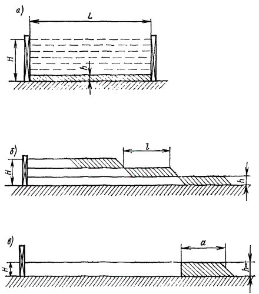

СП 357.1325800.2017 «Конструкции бетонные гидротехнических сооружений. Правила п»
Приказ Минстроя № 1628/пр от 07.12.2017Введён 08.06.2018
Справочная интерактивная копия для удобной работы с документом.
Не является официальным опубликованием. Официальный источник —
Минстрой России.
Перед применением проверяйте актуальность редакции и перечень обязательных требований.
О документе: разработчики, утверждение, регистрация, ключевые слова
СВОД ПРАВИЛ
СП 357.1325800.2017
Издание официальное
1 ИСПОЛНИТЕЛЬ - АО «ВНИИГ им. Б.Е. Веденеева»
- 2 ВНЕСЕН Техническим комитетом по стандартизации ТК 465 «Строительство»
- 3 ПОДГОТОВЛЕН к утверждению Департаментом градостроительной деятельности и архитектуры Министерства строительства и жилищнокоммунального хозяйства Российской Федерации (Минстрой России)
- 4 УТВЕРЖДЕН приказом Министерства строительства и жилищнокоммунального хозяйства Российской Федерации от 7 декабря 2017 г. № 1628/пр и введен в действие с 8 июня 2018 г.
- 5 ЗАРЕГИСТРИРОВАН Федеральным агентством по техническому регулированию и метрологии (Росстандарт)
6 ВВЕДЕН ВПЕРВЫЕ
В случае пересмотра (замены) или отмены настоящего свода правил соответствующее уведомление будет опубликовано в установленном порядке. Соответствующая информация, уведомление и тексты размещаются также в информационной системе общего пользования - на официальном сайте разработчика (Минстрой России) в сети Интернет
Настоящий нормативный документ на может быть полностью или частично воспроизведен, тиражирован и распространен в качестве официального издания на территории Российской Федерации без разрешения Минстроя России
Дата введения - 2018-06-08
УДК 625(083.13) ОКС 93.160
Ключевые слова: технология бетонных работ, возведение сооружений, многослойные блоки значительной высоты, послойное возведение, вибрированный и укатанный бетоны
Исполнитель Начальник отдела Комплексных исследований, стандартизации и логистического сопровождения проектов
И.П. Потапов
Введение
[Настоящий свод правил разработан с учетом требований федеральных законов от 21 июля 1997 г. № 117-ФЗ «О безопасности гидротехнических сооружений», от 30 декабря 2009 г. № 384-ФЗ «Технический регламент о безопасности зданий и сооружений».](http://docs.cntd.ru/document/902192610)
Свод правил разработан авторским коллективом АО «ВНИИГ им. Б.Е. Веденеева» (руководитель разработки - канд. техн. наук А.П. Пак , д-р техн. наук В.Б. Судаков, при участии д-ра техн. наук Б.М. Ерахтина и канд. техн. наук В.С. Шангина ).
1Область применения
Настоящий свод правил устанавливает требования к технологии бетонных работ при возведении и реконструкции гидротехнических сооружений, получения бетонных и железобетонных конструкций с заданными характеристиками.
Настоящий свод правил распространяется на выполнение комплекса работ по приготовлению, транспортированию, подаче, укладке бетонной смеси и уходу за бетоном до достижения заданных проектом характеристик бетона, включая контроль качества работ при возведении и реконструкции монолитных бетонных и железобетонных гидротехнических сооружений.
Настоящий свод правил не распространяется на производство бетонных работ по подводному бетонированию, торкретированию, изготовлению сборных бетонных и железобетонных конструкций.
2Нормативные ссылки
В настоящем своде правил использованы нормативные ссылки на следующие документы:
ГОСТ 310.1-76 Цементы. Методы испытаний. Общие положения
ГОСТ 310.2-76 Цементы. Методы определения тонкости помола
ГОСТ 310.3-76 Цементы. Методы определения нормальной густоты, сроков схватывания и равномерности изменения объема
ГОСТ 310.4-81 Цементы. Методы определения предела прочности при изгибе и сжатии
ГОСТ 7473-2010 Смеси бетонные. Технические условия
ГОСТ 10178-85 Портландцемент и шлакопортландцемент. Технические условия
ГОСТ 10180-2012 Бетоны. Методы определения
ГОСТ 10181-2014 Смеси бетонные. Методы испытаний
ГОСТ 18105-2010 Бетоны. Правила контроля и оценки прочности
ГОСТ 19185-73 Гидротехника. Основные понятия. Термины и определения
ГОСТ 22266-2013 Цементы сульфатостойкие. Технические условия
Правила производства и приемки работ
Concrete hydraulic structures. Rules of works and acceptance of works
ГОСТ 23732-2011 Вода для бетонов и строительных растворов. Технические условия
ГОСТ 26633-2012 Бетоны тяжелые и мелкозернистые. Технические условия
ГОСТ 30515-2013 Цементы. Общие технические условия
СП 14.13330.2014 «СНиП II-7-81 Строительство в сейсмических районах» (с изменением № 2)
СП 40.13330.2012 «СНиП 2.06.06-85 Плотины бетонные и железобетонные»
СП 41.13330.2012 «СНиП 2.06.08-87 Бетонные и железобетонные конструкции гидротехнических сооружений»
СП 48.13330.2011 «СНиП 12-01-2004 Организация строительства» (с изменением № 1)
СП 58.13330.2012 «СНиП 33-01-2003 Гидротехнические сооружения. Основные положения» (с изменением №1)
СП 101.13330.2012 «СНиП 2.06.07-87 Подпорные стены, судоходные шлюзы, рыбопропускные и рыбозащитные сооружения»
СП 246.1325800.2016 Положение об авторском надзоре за строительством зданий и сооружений
Примечание - При пользовании настоящим сводом правил целесообразно проверить действие ссылочных документов в информационной системе общего пользования -на официальном сайте федерального органа исполнительной власти в сфере стандартизации в сети Интернет или по ежегодному информационному указателю «Национальные стандарты», который опубликован по состоянию на 1 января текущего года, и по выпускам ежемесячного информационного указателя «Национальные стандарты» за текущий год. Если заменен ссылочный документ, на который дана недатированная ссылка, то рекомендуется использовать действующую версию этого документа с учетом всех внесенных в данную версию изменений. Если заменен ссылочный документ, на который дана датированная ссылка, то рекомендуется использовать версию этого документа с указанным выше годом утверждения (принятия). Если после утверждения настоящего свода правил в ссылочный документ, на который дана датированная ссылка, внесено изменение, затрагивающее положение на которое дана ссылка, то это положение рекомендуется применять без учета данного изменения. Если ссылочный документ отменен без замены, то положение, в котором дана ссылка на него, рекомендуется применять в части, не затрагивающей эту ссылку. Сведения о действии сводов правил целесообразно проверить в Федеральном информационном фонде стандартов.
3Термины, определения и сокращения
В настоящем своде правил применены следующие термины с соответствующими определениями:
3.1гидротехнические сооружения
Сооружения, подвергающиеся воздействию водной среды, предназначенные для использования и охраны водных ресурсов, предотвращения негативного воздействия вод, в том числе загрязненных жидкими отходами, включая плотины, здания гидроэлектростанций, водосбросные, водоспускные и водовыпускные сооружения, туннели, каналы, насосные станции, судоходные шлюзы, судоподъемники, доки; сооружения, предназначенные для защиты от наводнений и разрушений берегов морей, озер и водохранилищ, берегов и дна русел рек; струенаправляющие и оградительные сооружения; сооружения (дамбы), ограждающие золошлакоотвалы и хранилища жидких отходов промышленных и сельскохозяйственных организаций; набережные, пирсы, причальные сооружения портов; сооружения систем технического водоснабжения, системы гидротранспорта отходов и стоков, подачи осветленной воды, устройства защиты от размывов на каналах, сооружения морских нефтегазопромыслов, за исключением объектов централизованных систем горячего водоснабжения, холодного водоснабжения и (или) водоотведения предусмотренных Федеральным законом от 7 декабря 2011 г. № 416-ФЗ «О водоснабжении и водоотведении».Источник: СП 58.13330.2012, пункт 3.2
3.2гидроузел
Комплекс гидротехнических сооружений, объединенных по расположению и совместному функционированию.Источник: СП 58.13330.2012, пункт 3.3
3.3плотина
Водоподпорное сооружение, перегораживающее водоток и его долину для подъема уровня воды.Источник: ГОСТ 19185-73, статья 41
3.4цемент
Порошкообразный строительный вяжущий материал, обладающий гидравлическими свойствами, состоит из клинкера и, при необходимости, гипса или других материалов, содержащих в основном сульфат кальция, минеральных добавок.Источник: ГОСТ 30515-2013, приложение А
3.5минеральная добавка к цементу
Материал, вводимый в цемент взамен части клинкера с целью достижения определенных показателей качества и (или) экономии топливо-энергетических ресурсов.Источник: ГОСТ 30515-2013, приложение А
3.6класс прочности цемента
Условное обозначение одного из значений параметрического ряда по прочности цемента (МПА) в максимальные сроки, установленные нормативным документом.Источник: ГОСТ 30515-2013, приложение А
3.7портландцемент
Цемент на основе портландцементного клинкера.Источник: ГОСТ 30515-2013, приложение А
3.8бетонная смесь
Готовая к применению перемешанная однородная смесь вяжущего, заполнителей и воды с добавлением или без добавления химических и минеральных добавок, которая после уплотнения, схватывания и твердения превращается в бетон.Источник: ГОСТ 7473-2010, пункт 3.1
3.9нормируемая прочность бетона
Прочность бетона в проектном возрасте или ее доля в промежуточном возрасте, установленная в нормативном документе, по которому изготавливают бетонную смесь, готовую к применению, или конструкцию. В настоящем своде правил применяются следующие сокращения: ССБ - cульфитно-спиртовая бражка; С-3 - cуперпластификатор марки С-3; СНВ - cмола нейтрализованная воздухововлекающая; ЛХД - лесохимическая добавка; ХК - хлорид кальция; СП - сахарная патока; ГКЖ - гидрофобизирующие кремнийорганические жидкости.
Бетонные и железобетонные конструкции гидротехнических сооружений следует возводить в соответствии с СП 40.133330, СП 41.13330 и СП 58.13330, настоящим сводом правил.
Работы по возведению бетонных и железобетонных сооружений и конструкций должны выполняться в соответствии с проектом производства данных видов работ (ППР), который разрабатывает подрядная организация, привлеченная для их выполнения, и согласовывает с заказчиком.
Генеральным подрядчиком должна быть строительная организация с опытом создания технически сложных гидротехнических сооружений I-III классов и располагающая необходимыми и для этого современным оборудованием и механизмами.
5Общие требования к организации и производству бетонных работ при возведении гидротехнических сооружений
Организация бетонных работ, применяемые материалы и методы бетонирования должны обеспечивать получение бетонной кладки гидротехнических сооружений и конструкций, полностью удовлетворяющей требованиям проекта по прочности при сжатии и растяжении, водонепроницаемости, морозостойкости, стойкости против агрессивного воздействия воды, деформативным характеристикам, трещиностойкости и сдвиговым характеристикам.
Не позднее, чем за полгода до начала бетонных работ должны быть закончены работы по проектированию основных составов бетона. Для этого необходимо на строительной площадке не менее чем за 1,5 года до начала бетонных работ по основным сооружениям построить и оснастить оборудованием лабораторию строительства.
Подбор составов бетона должен производиться в соответствии с проектом.
Для крупных гидроузлов проектирование, подбор и необходимые исследования бетонов для основных сооружений должны производиться специализированными научно-исследовательскими организациями. Утвержденные генеральным проектировщиком составы бетона не позднее, чем за полгода до начала бетонных работ должны быть переданы генеральному подрядчику для проверки их лабораторией строительства в производственных условиях.
Для сокращения продолжительности строительства, трудозатрат и стоимости гидротехнических сооружений производство бетонных работ должно осуществляться индустриальными передовыми методами с применением комплексной механизации. К началу бетонных работ все применяемые механизмы должны быть освоены и опробованы.
При значительной разнице в требованиях к бетонам различных зон сооружений и конструкций и соответственно при значительной разнице в требованиях к качеству материалов для их приготовления в составе бетонных хозяйств для строительства крупных гидроузлов следует предусматривать возможность разделения технологических линий для приготовления морозостойких ( MF ≥ 200), кавитационно-стойких бетонов и бетонов внутренней и подводной зон.
Технологические линии должны быть рассчитаны на дифференцированную подготовку заполнителей в соответствии с нормативными документами.
Бетонная смесь должна приготовляться на центральном автоматизированном бетонном заводе, приготовление бетонной смеси на нескольких заводах допускается при технико-экономическом обосновании.
Для строительства крупных гидроузлов с бетонными плотинами следует, как правило, использовать бетонные заводы цикличного действия в сочетании с заводами непрерывного действия. Соотношение мощностей заводов устанавливается при разработке проекта производства работ.
Бетонные заводы должны создаваться по типовым проектам. Проектирование и строительство индивидуальных бетонных заводов допускается лишь при невозможности применения типовых заводов.
Бетонные заводы для строительства гидроузлов должны быть оборудованы устройствами для введения в бетонную смесь пластифицирующих и воздухововлекающих добавок с раздельными трактами их дозирования, при необходимости, дисперсных минеральных добавок, а также устройствами для подогрева и охлаждения составляющих бетонных смесей и установками для контрольного грохочения крупного заполнителя.
Бетонное хозяйство строительства должно быть принято в постоянную эксплуатацию, в соответствии с проектом, до начала укладки бетона в основные сооружения.
Для строительства гидротехнических сооружений с объемом бетона более 1 млн. м³ при проектировании бетонного хозяйства следует предусматривать разделение его на очереди, обеспечивающие последовательный ввод в эксплуатацию смесительных цехов с одновременным вводом технологических линий подготовки заполнителей по полной проектной схеме равноценной мощности.
Помещения бетонного хозяйства и коммуникации подачи заполнителей и бетонной смеси должны быть изолированы от влияния низких и высоких температур воздуха, а также инсоляции и снабжены необходимыми обогревательными, охладительными и обеспыливающими устройствами.
При строительстве каскада гидроэлектростанций следует предусматривать возможность полного или частичного использования одного и того же бетонного хозяйства для последовательного возведения двух-трех смежных гидроузлов с организацией массовых перевозок бетонных смесей на расстояния до 50 км.
Транспортирование бетонной смеси от бетонного завода к месту укладки должно производиться с применением средств и механизмов, предусмотренных проектом производства работ.
Принятые способы транспортирования бетонной смеси должны гарантировать сохранение однородности, необходимой степени подвижности или жесткости и заданной температуры бетонной смеси.
Укладка бетонной смеси в блоки бетонирования должна производиться в последовательности, указанной проектом производства работ. Размеры блоков бетонирования и тип применяемой разрезки сооружения на блоки бетонирования (секционная, столбчатая) определяются технико-экономическими расчетами исходя из расчетной интенсивности бетонных работ и термонапряженного состояния бетонной кладки в строительный и эксплуатационный периоды.
При разработке проектов производства бетонных работ необходимо предусматривать возможность совмещения строительных швов с температурно-деформационными конструктивными швами, с тем чтобы, увеличив плановые размеры блоков бетонирования, обеспечивать возможность использования полной комплексной механизации бетонных работ и сокращения объема трудоемких вспомогательных работ (опалубочных, цементационных и т. п.).
Для рациональной организации механизированной укладки бетонной смеси в строительные блоки сооружений необходимо предусматривать следующее:
производительность выбранных бетонных заводов, средств транспортирования и укладки, занятых на подаче, разравнивании и уплотнении бетонных смесей, должна быть взаимно увязана и соответствовать расчетной интенсивности бетонирования сооружения;
производительность механизмов, применяемых на отдельных операциях (подаче, разравнивании, уплотнении), должна быть кратна расчетной производительности бетоноукладочного комплекта -расчетной интенсивности приходящегося на него потока бетонной смеси;
технология укладки бетонной смеси (объем подаваемых порций бетонной смеси, высота и число одновременно укладываемых слоев в блоке, перекрываемая площадь слоев и др.) должна быть увязана с производительностью бетоноукладочных средств, занятых на ее подаче, разравнивании и уплотнении.
Уплотнение бетонной смеси в блоках сооружений и конструкций должно производиться механизированными средствами с подвесными вибропакетами и только в исключительных случаях, в труднодоступных местах - с помощью одиночных (ручных) глубинных или поверхностных вибраторов.
Для улучшения термонапряженного состояния бетонных плотин и создания благоприятного температурного режима бетонной кладки простыми средствами их возведение должно производиться равномерно по всему фронту с перерывами в укладке смежных по высоте блоков 1-10 сут.
Напорная и низовая грани бетонных плотин во время строительства должны быть защищены от резких перепадов температур.
При включении в проект производства работ (4.2) для конкретного гидроузла местных технологических правил бетонирования следует дополнительно разрабатывать типовые технологические карты на основные операции, выполняемые в ходе бетонных работ.
Качество бетонной смеси и бетона на строительстве должно систематически контролироваться строительной лабораторией и технической инспекцией, состоящей из квалифицированных работников.
Контрольная документация бетонной инспекции и лаборатории должна сохраняться и предъявляться правительственной комиссии при приемке сооружений в эксплуатацию, а затем передаваться заказчику. Контрольная документация должна состоять из материалов, необходимых для суждения о заданных проектом свойствах бетона в сооружении, однородности и монолитности, а также обо всех производственных обстоятельствах, имеющих значение для оценки качества бетона.
На все механизмы, применяемые для производства бетонных работ, должны составляться и систематически заполняться производственные паспорта (техническая характеристика, результаты наблюдений и осмотров, сведения о всех отказах и ремонтах).
Контроль работы механизмов или групп механизмов необходимо осуществлять, как правило, с помощью самопишущих приборов с последующим хранением записей в соответствующем порядке в течение всего времени строительства объекта.
Классы (марки) вибрированного и укатанного бетонов по прочности В и их расчетные характеристики устанавливаются для гидротехнических сооружений и их частей в соответствии с СП 40.13330, СП 41.13330 и СП 101.13330.
В соответствии с вышеуказанными сводами правил для гидротехнических сооружений и их частей устанавливаются необходимые марки бетонов по водонепроницаемости W и морозостойкости F.
Принимаемые в проектах технические требования к бетонам гидротехнических сооружений и их частей уточняются согласно ГОСТ 26633.
Для массивных гидротехнических сооружений с зональной разрезкой требования к прочности, водонепроницаемости и морозостойкости должны быть установлены дифференцированно, в строгом соответствии с фактическими условиями работы бетона различных зон и частей сооружений. При этом должно быть назначено минимально необходимое число основных марок, приготовление и укладка которых должны вестись одновременно.
Для крупных бетонных плотин при равномерном их наращивании следует дифференцировать требования к бетону внутренней и подводной зон по высоте, когда это не приводит к увеличению числа одновременно применяемых марок бетона.
Марки бетона по прочности и водонепроницаемости должны, как правило, назначаться в возрасте 180 сут, а для массивных бетонных сооружений с объемом бетона более 1 млн м³ - 360 сут. Марки бетона по морозостойкости назначаются в возрасте 28 сут.
При укладке бетона в осенне-зимний или зимний период, когда среднесуточная температура наружного воздуха ниже 0 °С или минимальная суточная температура наружного воздуха минус 5 °С и ниже, разрешается устанавливать показатели бетона по прочности в возрасте 28, 60 и 90 сут. Более ранние, чем 180 сут, сроки назначения марок бетона по прочности и водонепроницаемости устанавливаются при сокращенных сроках строительства, более раннем вводе конструкций в эксплуатацию или небольших объемах бетонных работ с соответствующим обоснованием выбранного марочного возраста в проекте.
В проектной документации и в спецификациях, поступающих на бетонный завод, необходимо указывать установленный марочный возраст для каждой марки или класса бетона.
Подвижность и жесткость бетонной смеси, укладываемой в монолитные конструкции, должны назначаться в зависимости от размеров конструкции, густоты армирования, способов транспортирования и применяемых средств уплотнения бетонной смеси при ее укладке и должны обеспечивать получение бетонных конструкций без дефектов.
Значения подвижности (осадки конуса) бетонной смеси в момент ее укладки назначаются в соответствии с таблицей 1 и уточняются технической инспекцией (строительной лабораторией) исходя из реальных условий бетонирования.
Таблица 1
Характеристика бетонируемых конструкций
Значение осадки конуса, см
Массивные бетонные конструкции без рабочей арматуры
1-3
Массивные армированные конструкции с содержанием арматуры до 0,5%
3-6
Железобетонные конструкции с содержанием арматуры до1%
6-8
Железобетонные конструкции, сильно насыщенные арматурой (более 1 %)
8-12
Для железобетонных конструкций с очень большим насыщением арматурой (свыше 1,5 %) допускается применение литых бетонных смесей без виброуплотнения.
При применении для массивных конструкций (внутренние зоны гравитационных плотин и пр.) малоцементного укатанного бетона с нулевой осадкой конуса жесткость бетонной смеси на месте укладки должна составлять 20-30 с.
Подвижность и жесткость бетонной смеси на выходе из бетонного завода задаются строительной лабораторией с учетом их изменения за время транспортирования и подачи смеси до места укладки в блоке.
Рабочие составы (рецептуры), передаваемые лабораториями на бетонные заводы, должны предусматривать выпуск бетонных смесей 3-4 подвижностей (осадок конуса), установленных для конкретного строительства (см. таблицу 1).
Рабочие составы (рецептуры) бетонной смеси устанавливаются строительной лабораторией, согласовываются с проектной организацией и утверждаются главным инженером строительства.
Строительная лаборатория [1] должна систематически вести наблюдение за приготовлением бетонной смеси и своевременно корректировать составы бетонной смеси в соответствии с изменениями в технологии бетонных работ и характеристиками реально применяемых материалов для бетона.
Выбор материалов для вибрируемых гидротехнических бетонов (вяжущих, поверхностно-активных добавок, тонкомолотых и других добавок, песка, крупного заполнителя и воды) производится в соответствии с ГОСТ 26633.
Применение заполнителей с прерывистой гранулометрией разрешается в исключительных случаях, если целесообразность их применения доказана экспериментально и подтверждена технико-экономическими расчетами.
При установлении расхода цемента необходимо учитывать его потери, вызванные производственными условиями. Значение потерь устанавливается совместно проектной н строительной организациями.
Для снижения расхода цемента необходимо применять гравий или щебень с возможно большей крупностью. При этом следует учитывать ограничения, указанные в 6.14-6.17.
Заполнители с зернами крупностью, превышающей 120 мм, могут применяться при соответствующем технико-экономическом обосновании в каждом отдельном случае.
Верхний предел крупности заполнителей в монолитном бетоне должен быть не более 1/3 наименьшего размера конструкции, а в железобетонных и армированных конструкциях - 3/4 наименьшего расстояния в свете между стержнями арматуры.
При подаче бетона бетононасосами наибольшая крупность заполнителей должна быть не более 1/2 наименьшего расстояния между арматурными стержнями.
При бетонировании плит крепления откосов грунтовых сооружений и облицовок каналов наибольшая крупность зерен заполнителя должна быть не более 1/3 их толщины.
Наибольшая крупность зерен заполнителей в бетонных смесях должна соответствовать техническим характеристикам оборудования бетонных заводов, средствам доставки бетонной смеси к бетонируемым объектам, ее подачи и уплотнения в блоках.
Применяемые способы подготовки заполнителей, их транспортирования и складирования должны обеспечивать соответствие качества и зернового состава заполнителей в расходных бункерах бетонного завода требованиям А.1 (приложение А) ГОСТ 26633-2012. При этом следует учитывать 5.5-5.7.
Модуль крупности песка для гидротехнических сооружений I и II классов, применяемого для приготовления бетона в течение каждого строительного сезона (года), не должен отклоняться более чем на ±0,20 его среднего значения. В случае, если значения колебания гранулометрического состава природного песка выходят за указанные пределы (для песков, подвергаемых промывке, модуль крупности должен определяться с учетом изменения гранулометрии песка при промывке), песок должен быть разделен на две фракции путем гидроклассификации. При разделении песка на фракции граничное зерно выбирают так, чтобы объемы получаемых фракций были примерно равны.
При фракционировании песка содержание в каждой фракции зерен песка смежной фракции должно быть постоянным - не должно быть более 5 % по массе (фракции).
Примечание - Для гидротехнических сооружений III и IV классов допускается применение песков с колебаниями значения модуля крупности ±0,30 в течение строительного сезона (года).
При технико-экономическом обосновании для приготовления бетона могут применяться искусственные пески, смесь естественного песка с искусственным или естественных песков двух месторождений.
Применяемые смеси песков по своим характеристикам должны соответствовать ГОСТ 26633.
Способами транспортирования заполнителей для бетона, их складирования и подачи к бетоносмесительным установкам должна быть исключена возможность их загрязнения и смешения различных фракций, а также расслоения заполнителей по крупности или смерзания в зимнее время.
В случае, если применяемый крупный заполнитель состоит из хрупких, легко дробящихся и истирающихся пород (известняки, доломиты, песчаники и т. п.) или применяемые способы транспортирования и складирования крупных заполнителей не обеспечивают сохранение требуемой чистоты и зернового состава деловых фракций, необходимо предусматривать контрольное грохочение материала перед подачей его на бетонный завод.
Заполнители, доставленные на склады методом гидротранспорта, а также прошедшие через гидравлические классификаторы или промывочные устройства, должны применяться после выдерживания на складах с дренажными устройствами либо подвергаться принудительному обезвоживанию для получения стабильной влажности. Для песка влажность должна быть не более 6 %, а для крупного заполнителя способы не более 1 %.
Требования к заполнителям для укатанного бетона должны быть изложены в НД, учитывающих особенности конструкции и технологии строительства конкретного сооружения.
Необходимые мероприятия по обеспечению 6.18-6.22 должны быть предусмотрены в проектах карьерного и бетонного хозяйств с учетом конкретных условий строительства.
Для снижения расхода цемента и улучшения основных свойств бетонной смеси и бетона в бетонную смесь при ее приготовлении, следует вводить добавки поверхностно-активных веществ. Для этого на бетонных заводах должны быть предусмотрены устройства, обеспечивающие возможность одновременного введения двух добавок, как правило, пластифицирующих (ССБ, С-3) и воздухововлекающей (СНВ или ЛХД).
Оптимальные для конкретных условий поверхностно-активных добавки определяются при проектировании составов бетона.
За введением добавок в бетонную смесь должен быть установлен тщательный контроль строительной лаборатории.
Если для водосбросных или водопропускных трактов ППР предусмотрено применение износостойкого или кавитационно-стойкого бетона, на бетонном заводе должна быть оборудована технологическая линия приготовления бетонов на следующих материалах:
на песке по ГОСТ 26633 - для морозостойкого бетона гидротехнических сооружений;
на чистом щебне изверженных горных пород, прочностью не менее 100 МПа, крупностью не более 80 мм для износостойкого бетона и 40 мм для кавитационно-стойкого - в качестве крупного заполнителя;
на чистоклинкерном низкоалюминатном (С3А ≤ 7%) портландцементе марок 400-500 (при отсутствии агрессивности воды-среды) с содержанием C3S в пределах 50 % - 55 %; в случае агрессивности воды-среды должен применяться сульфатостойкий портландцемент - в качестве вяжущего.
В спецификациях на бетонную смесь, передаваемых на бетонные заводы строительной лабораторией после приемки блока к бетонированию, должны быть указаны: марка (класс) бетона по проекту (полностью), его возраст, требуемый объем бетона, вид цемента, предельная крупность заполнителей, подвижность (жесткость) бетонной смеси па месте укладки.
Составляющие бетонной смеси должны дозироваться по массе. При контрольной проверке дозирования, результаты которой определяются по данным 30 измерений, не менее 85% отклонений фактической массы от заданного значения дозы должны быть не выше указанных в таблице 2.
Таблица 2
Точность дозирования,%
Точность дозирования,%
Наименование составляющих
на автоматизированных бетонных заводах
на мелких бетоносмесительных установках
Цемент и активные добавки, дозируемые в виде порошка
±1
±2
Заполнители
±2
±3
Вода и водные растворы добавок (с учетом влаги в заполнителях и добавках)
Бетонные заводы производительностью свыше 200 тыс. м³ /год должны оснащаться приборами для регистрации массы фактически отдозированных на замес материалов и суммирования расхода материалов за рабочую смену.
Количество воды в замесе устанавливается с обязательным учетом фактической влажности заполнителей, особенно песка, и корректируется лабораторией строительства; при этом должна быть обеспечена точность дозирования составляющих бетона, приведенная в таблице 2.
Весовые дозаторы для заполнителей могут применяться как индивидуальные, так и суммирующие. Управление дозаторами должно быть автоматическое, в отдельных случаях, для бетоносмесителей емкостью до 1200 л (по загрузке), допускается ручное управление.
Кроме проверки точности работы дозирующего устройства необходимо контролировать все особенности его работы (полнота опорожнения, возможность переполнения дозатора и т. п.), которые могут оказывать влияние на количество материала, поступающего в бетоносмеситель.
Для обеспечения бесперебойности работы весовых дозаторов, особенно при напряженной круглосуточной работе, необходимо ежедневно производить профилактические осмотры дозаторов с устранением всех возникающих неполадок.
Лаборатория строительства должна вести наблюдения за правильностью дозировки составляющих бетонной смеси и изменять ее дозировку при изменениях влажности и зернового состава заполнителей. При этом:
бетонные заводы должны быть оборудованы датчиками-влагомерами для автоматического определения влаги, содержащейся в заполнителях, направляемых в бетоносмеситель;
влажность песка и крупных заполнителей должна определяться ежесуточно и дополнительно при поступлении новых партий и после выпадения осадков;
необходимо определять зерновой состав заполнителей не реже одного раза в сутки и, кроме того, каждый раз при переходе к расходованию нового штабеля.
Активные минеральные добавки (зола уноса, микросилика и т. п.) при приготовлении бетонной смеси вводятся в бетоносмеситель одновременно с цементом.
При введении добавок поверхностно-активных веществ (ПАВ) в виде водных растворов их следует дозировать по массе и подавать в бетоносмеситель одновременно с водой.
Выбор применяемых добавок должен быть обоснован подбором состава бетона и его исследованиями, выполненными лабораторией строительства с привлечением специализированных научноисследовательских организаций. Выбор применяемых добавок должен быть согласован с проектной организацией.
В случае необходимости производится охлаждение или подогрев составляющих бетонной смеси путем охлаждения или подогрева воды, заполнителей или добавления в замес чешуйчатого льда. В условиях отрицательных температур наружного воздуха необходимо осуществлять оттаивание заполнителей .
Рекомендуется следующая последовательность применения средств для охлаждения / подогрева составляющих бетонной смеси в зависимости от требуемой степени регулирования ее температуры:
Летний период охлаждение воды затворения; присадка искусственного льда в бетоносмеситель; охлаждение крупного заполнителя; охлаждение песка. Зимний период подогрев воды затворения; подогрев песка; подогрев крупного заполнителя.
Расходные бункеры для заполнителей и цемента должны полностью выгружаться и очищаться перед загрузкой материалов других видов, а бункеры выдачи бетонной смеси - при изменении марки (класса) бетона.
Применяемые в настоящее время бетоносмесительные установки непрерывного действия могут быть с различными конструкциями дозаторов и смесительного барабана. Управление бетоносмесительными заводами непрерывного действия должно быть автоматизированным.
Загрузка бетоносмесителей непрерывного действия должна производиться непрерывно и одновременно всеми отдозированными составляющими бетона. При невыполнении этого требования бетонная смесь должна быть забракована.
Для приготовления бетонной смеси могут применяться бетоносмесители как периодического, так и непрерывного действия. При выборе типа и вместимости бетоносмесителя следует учитывать: интенсивность приготовления, наибольшую крупность заполнителя и жесткость бетонной смеси, принятые проектом.
Расходные бункеры для цемента и заполнителей должны выполняться с вертикальными стенками и коническим несимметричным днищем, наклон стенок которого образует с горизонтом угол не менее 55°. Выпускные отверстия должны обеспечивать свободное истечение материалов.
Материалы из дозаторов должны поступать в бетоносмеситель без потерь. Необходимо исключать возможность утечек цемента. Потери цемента должны предотвращаться надлежащим уплотнением стыков, устройством щитков у входных отверстий смесителей и уменьшением высоты падения материала при подаче его в смеситель.
Загрузка бетоносмесителя периодического действия должна производиться из дозирующих устройств в следующем порядке: вначале в смеситель подается вода; после заливки 15 % - 20 % воды, требуемой на замес, одновременно загружают цемент, добавки и заполнители, не прерывая подачи воды до требуемой нормы.
Продолжительность перемешивания бетонной смеси, считая с момента окончания загрузки бетоносмесителя до момента начала выпуска бетонной смеси, следует устанавливать экспериментально. Минимальная продолжительность перемешивания бетонной смеси в теплое время года должна приниматься по таблице 3.
Таблица 3
Значение вместимости барабана бетоносмесителя (по выходу), л
Минимальная продолжительность перемешивания объемной массы бетонной смеси более 2200 кг/м³ , с, при осадке конуса
Минимальная продолжительность перемешивания объемной массы бетонной смеси более 2200 кг/м³ , с, при осадке конуса
Установленную продолжительность перемешивания следует контролировать автоматически. При отсутствии счетчика допускается применение электросекундомера с регистрацией его работы.
Продолжительность перемешивания бетонной смеси в бетоносмесителях непрерывного действия определяется их паспортной характеристикой (длиной барабана, углом его наклона, числом оборотов и др.) и в зависимости от качества получаемой бетонной смеси должна корректироваться строительной лабораторией и в соответствии с инструкциями заводов-изготовителей.
При опорожнении бетоносмесителя должны быть приняты меры против расслоения выгружаемой бетонной смеси. Для этого рекомендуется устанавливать направляющие устройства так, чтобы поток выгружаемой бетонной смеси направлялся вертикально в центр раздаточного бункера, бадьи или других транспортных средств.
Температура бетонной смеси на выходе из бетоносмесителя должна соответствовать установленной проектом, в зависимости от наружной температуры, вида транспорта, бетонируемой конструкции и местных условий.
Проверка соответствия составов бетонной смеси, выдаваемых бетоносмесителями, заданным составам должна производиться не реже одного раза в месяц. Для этого должны отбираться пробы бетонной смеси, которые подвергаются отмывке и высушиванию для определения зернового состава заполнителей , количества цемента и воды в смеси.
Транспортирование бетонной смеси должно быть организовано так, чтобы бетонная смесь на месте укладки имела заданную подвижность (жесткость) и связность.
Необходимая подвижность бетонной смеси при выпуске ее бетонным заводом и предельно допустимая продолжительность транспортирования смеси должны устанавливаться строительной лабораторией в зависимости от температуры наружного воздуха и состава бетонной смеси.
Для бетонной смеси без добавок-регуляторов схватывания время транспортирования смеси от момента ее приготовления до момента подачи в блоки сооружения не должно превышать значений, указанных в таблице 4.
Таблица 4
Температура бетонной смеси и наружного воздуха, ºС
При применении цементов с удлиненными сроками схватывания или добавок-замедлителей схватывания (СП, ССБ, С-3 в повышенных дозировках и т. д.) предельная продолжительность транспортирования смесей может быть увеличена в 1,5-3 раза.
При каскадном методе строительства гидроузла с массовой перевозкой бетонной смеси на расстояние свыше 15 км выбор добавок, предотвращающих расслоение смеси при транспортировании, и добавокрегуляторов схватывания, - а также определение предельно допустимой продолжительности транспортирования смеси должны производиться специализированной научно-исследовательской организацией совместно с лабораторией строительства.
Способы транспортирования бетонной смеси до блока бетонирования определяются проектом производства работ и должны соответствовать производительности бетонного хозяйства, характеристиками применяемых бетонных смесей и обеспечивать требуемую интенсивность бетонных работ. Для транспортирования смеси должны применяться, как правило, специализированные средства: при порционном способе - автобетоновозы, автобадьевозы, автосилобусы, автобетоносмесители, железнодорожные платформы для перевозки бадей или оборудованные опрокидными ковшами и др.; при непрерывном способе - ленточные конвейеры, бетононасосы и пневмобетоноукладчики.
Полезная вместимость транспортного средства (бетоновоза, силобуса, бадьевоза и т. д.) должна быть кратна объему замеса бетоносмесителя завода цикличного действия или бункера-накопителя завода непрерывного действия.
Загруженные на бетонном заводе транспортные средства должны снабжаться накладной с указанием марки (класса) бетона. У места приема бетонной смеси накладная передается представителю строительной организации, выполняющей бетонирование.
При транспортировании бетонной смеси повышенной пластичности особое внимание следует уделять местам примыкания заднего борта к кузову автосамосвала. При необходимости следует его уплотнять прокладками из листовой резины.
Разгрузка применяемых транспортных средств должна производиться в течение 15-30 с, при этом транспортные средства должны обеспечивать полное их опорожнение от бетонной смеси. Очистка и промывка транспортных средств от налипшей бетонной смеси должна производиться не реже одного раза в смену.
Не допускается в процессе очистки кузовов автосамосвалов и силобусов, а также бадей и бункеров подвергать их ударному воздействию ручным инструментом: кувалдами, ломами и т. п. При их разгрузке следует применять вибраторы.
Ленточные конвейеры могут применяться как для транспортирования бетонной смеси, так и для ее распределения по бетонируемому блоку. Применять ленточные конвейеры следует, как правило, в сочетании с бетонными заводами непрерывного действия.
Рекомендуется применять специальные высокоскоростные автоматизированные конвейерные системы, предназначенные для транспортирования и подачи бетонных смесей и оснащенные бетонораспределительными механизмами (распределителями). Монтаж и эксплуатация этих систем должны быть в соответствии с инструкциями предприятий-изготовителей.
Приводные барабаны конвейеров должны быть оборудованы скребками, обеспечивающими возврат раствора в состав бетонной смеси. Нижняя (холостая) ветвь ленты конвейера должна быть в виде защищена съемными щитками. Верхняя (рабочая) ветвь ленты должна быть в виде лотков. Наклон наружных роликов к горизонту должен быть не менее 30°. Прилипший к нижней ветви конвейера раствор должен удаляться гидросмывом.
Разгрузку ленты рекомендуется производить с торца конвейера. Разгрузку участка конвейера допускается производить с применением виброплужковых устройств.
В процессе эксплуатации конвейеров строительная лаборатория обязана систематически проверять качество транспортируемой бетонной смеси с тем, чтобы своевременно принять необходимые меры по предотвращению расслаивания смеси и потери ее растворной составляющей.
Магистральные ленточные конвейеры для предохранения их от воздействия низких температур наружного воздуха, атмосферных осадков, ветра и солнечной радиации должны размещаться в утепленных несгораемых галереях. Галереи должны быть обеспечены необходимыми энергетическими коммуникациями и средствами связи.
Применение бетононасосов, совмещающих горизонтальное и вертикальное транспортирования бетонной смеси, эффективно при бетонировании густоармированных конструкций и труднодоступных мест: при устройстве туннелей, мостов, возведении зданий гидроэлектростанций, подпорных стен и других конструкций.
В качестве крупного заполнителя для бетонной смеси может использоваться гравий или щебень. Количество зерен максимальных размеров в крупном заполнителе должно быть не более 15 %, а лещадных и игловатых -5 % по массе. Рекомендуемое соотношение мелкого и крупного заполнителей в общей массе приведено в таблице 7.
Соотношение между максимальным размером зерен крупного заполнителя и внутренним диаметром трубопровода должно быть не менее 1:2 для гравия и 1:3 для щебня. Трубы диаметром менее 100 мм следует применять только после получения результатов опытного нагнетания смеси.
Для бетононасосов отечественного производства рекомендуются следующие показатели бетонной смеси при нагнетании: водоцементное отношение 0,40-0,65, осадка конуса не менее 4 см для бетононасосов с гидравлическим приводом и 8 см для бетононасосов с электромеханическим приводом.
Бетонные смеси должны приготовляться с добавками поверхностноактивных веществ - ССБ, С-3, ЛХД, СНВ и др. Для повышения связности бетонной смеси целесообразно вводить в нее микросилику (4 % - 6 % от массы цемента).
Подбор состава бетонной смеси должен осуществляться строительной лабораторией. За оптимальный состав принимается тот, который позволяет получить удобоукладываемую смесь, обеспечивающую требуемые свойства бетона при минимальном расходе цемента.
Монтаж и эксплуатацию бетононасосов и трубопроводов необходимо производить в соответствии с действующими инструкциями, обращая особое внимание на надежность соединения звеньев трубопроводов.
Длина трубопроводов и число колен в системе бетоновода для уменьшения возникающих сопротивлений перемещению бетонной смеси должны быть минимальными. Колен под углом 90° следует избегать, заменяя их двумя коленами под углом 135° с прямой вставкой между ними.
Для продвижения бетонной смеси по горизонтальным и вертикальным участкам и на поворотах труб бетоновода необходима различная мощность бетононасосов, поэтому для расчета транспортирования бетонной смеси по сложной трассе используют «Эквивалентные длины по горизонтали, м», принимая следующее: 1 м длины вертикального бетоновода соответствует 8 м горизонтального, а приведенная длина наклонного участка с углом наклона (колена) 90°, 45°, 30°, 15° - горизонтальным участкам длиной 12, 7, 5, 3 м, соответственно, (см. таблицу 8).
На горизонтальных участках для удобства промывки бетоновод рекомендуется укладывать с уклоном около 5°. Вертикальные или наклонные участки бетоновода следует монтировать не ближе 7-8 м от бетононасоса.
Загрузка бетононасоса свежей пластичной смесью должна производиться из транспортных средств через специальный бункер перед бетононасосом, а при благоприятных условиях - непосредственно с бетонного завода через раздаточный бункер. Приемный бункер должен быть снабжен специальной решеткой для предотвращения попадания в бетононасос и бетоновод заполнителя размерами более допустимых. Решетку, для ускорения прохода материала, рекомендуется снабжать вибраторами.
Перед сборкой бетоновода его секции должны быть очищены изнутри и снаружи от загрязнения и промыты водой. Внутренняя поверхность бетоновода должна быть, непосредственно перед бетонированием, увлажнена
Таблица 8
Элемент бетоновода
Эквивалентная длина по горизонтали, м
1 м по вертикали Колено
8
90°
12
45°
7
30°
5
15°
3
и смазана путем пропуска между двумя пыжами порции цементного раствора пластичной консистенции состава 1:2.
Перерывы в подаче бетонной смеси без спуска ее из системы бетоноводов допускаются не более чем на срок до начала схватывания цемента. При этом, следует каждые 5 мин возобновлять нагнетание бетонной смеси по системе в течение 15-20 с. При больших перерывах и по окончании бетонирования бетоноводы должны быть опорожнены и промыты.
Утечка цементного раствора из стыков бетоновода не допускается. При появлении утечки необходимо немедленно прекратить работу бетононасоса и принять неотложные меры к ее устранению. Отключенные от магистрали секции бетоновода необходимо сразу же очищать от бетонной смеси.
При подаче бетонной смеси бетононасосами без манипулятора рекомендуется начинать укладку с наиболее удаленной части блока с постепенным уменьшением длины бетоновода или производить ее подачу в одну точку с распределением поворотными лотками, виброжелобами, виброхоботами.
Способы подачи бетонной смеси устанавливаются в проектах производства бетонных работ исходя из особенностей конструкции сооружения, топографии и геологии строительной площадки (створа), предъявляемых требований к бетонной смеси, принимаемой толщины укладываемых слоев и допустимой продолжительности их перекрытия.
Для подачи бетонной смеси используются:
автосамосвалы, осуществляющие только подачу бетонной смеси или совмещающие транспортирование смеси и ее подачу;
краны, установленные на эстакадах;
краны, установленные на основании сооружения, а также на самих сооружениях;
передвижные или стационарные кабельные краны;
ленточные конвейеры и бетононасосы, совмещающие транспортирование и подачу бетонной смеси.
Конструкции эстакад, инвентарных мостиков и других вспомогательных сооружений и приспособлений для подачи бетонной смеси в блоки сооружений должны быть определены в проекте производства работ, проектная организация должна на них разработать рабочую документацию. Кроме этого, должны быть определены конструкции опор и допустимость их оставления в бетоне сооружений.
Перед подачей бетонной смеси в блоки должна быть проверена готовность к работе всех средств механизации, вспомогательных устройств и необходимых коммуникаций.
Для подачи бетонной смеси следует применять два типа бадей: неповоротные, перемещаемые от мест загрузки в транспортных средствах, и поворотные (опрокидные), загружаемые из транспортных средств (автосамосвалов) на месте укладки в горизонтальном положении и перемещаемые кранами в блоки бетонирования в вертикальном положении.
Из серийно выпускаемого оборудования, следует компоновать наиболее рациональные комплекты: транспорт - бадья - бетоноукладочный кран, - производительность и грузоподъемность (вместимость) каждого звена которых согласуются друг с другом и соответствуют расчетной интенсивности бетонирования.
Большегрузные бадьи вместимостью более 6 м³ следует применять при использовании для разравнивания и уплотнения бетонной смеси специальных механизмов, например бульдозеров, манипуляторов с пакетами вибраторов, виброкатков и др.
При бетонировании массивных сооружений блоками большой площади для уменьшения затрат труда на разравнивание бетонной смеси в блоке и исключения излишних ее перемещений, разгрузка подаваемых в блок порций бетонной смеси должна производиться так, чтобы расстояние между центрами масс r разгружаемых порций было равно определяемому по формуле
Формула из оригинального документа не распознана при конвертации. Сверьтесь с официальным изданием.
где V 0 - объем разгружаемых порций бетонной смеси, м³ ; h - заданная толщина слоя бетонной смеси в блоке, м.
Вычисленное значение r должно быть округлено в меньшую сторону - до 0,25 м.
При подаче бетонной смеси кабель-кранами должны применяться, как правило, неповоротные бадьи, загружаемые из транспортных средств на специально устраиваемых площадках. При этом бадьи от кабель-крана не отцепляются. Операции вертикальных и горизонтальных перемещений груза должны совмещаться.
Бетоноукладочные краны не должны использоваться на вспомогательных операциях по установке в блоках бетонирования опалубки, арматуры, металлоконструкций и пр. Эти операции должны выполняться вспомогательными кранами или автопогрузчиками.
Во избежание возможного расслоения бетонной смеси при подаче ее в блок в бадьях высота свободного падения смеси должна быть минимальной и не превышать 6 м - для неармированных конструкций, 2 м - для армированных и 1 м - при подаче смеси на перекрытия различных помещений, потерн и галерей.
При крупности заполнителя 80-120 мм свободное сбрасывание бетонной смеси с высоты 3-6 м допустимо только при ее подвижности (осадке конуса) 2-4 см.
Подачу бетонной смеси с помощью виброхоботов следует применять в густоармированных блоках, местах, не доступных для крановой подачи, при глубине опускания бетонной смеси более 10 м.
При глубине опускания бетонной смеси 10-30 м следует применять, как правило, полиэтиленовые хоботы диаметром 400 мм, изготавливаемые на строительной площадке.
При глубине опускания бетонной смеси менее 10 м следует применять металлические звеньевые хоботы из элементов длиной 600-1000 мм и внутренним диаметром не менее трех размеров наибольшей крупности заполнителя.
Хоботы устанавливаются вертикально: оттягивание в сторону допускается не более 0,25 м на 1 м высоты, причем два нижних звена должны обязательно оставаться вертикальными.
После окончания бетонирования блока хоботы должны быть тщательно очищены от налипшей бетонной смеси и промыты за пределами места бетонирования.
В отдельных случаях, при подаче бетонной смеси на большую глубину, например в туннель, в шахту, в помещения подземных ГЭС и другие элементы подземных сооружений, взамен хоботов следует применять изготовляемые на строительной площадке трубы с фланцевыми соединениями и внутренним диаметром, превышающим в 4-5 раз наибольший размер крупного заполнителя.
При глубине подачи до 30 м нижние части труб необходимо снабжать гасителем с затвором, а при бóльшей глубине применять бетон с заполнителями крупностью менее 40 мм при подвижности (осадке конуса) бетонной смеси 3-6 см.
Подачу бетонной смеси автосамосвалами с инвентарных мостиков следует производить в случаях необходимости интенсивного ведения работы при возведении сооружений больших площадей и небольшой высоты.
При возведении бетонных плотин или подобных массивных сооружений подача бетонной смеси непосредственно к месту укладки автосамосвалами с перемещением их по уложенному бетону может производиться при бетонировании однослойными блоками или при применении укатанных бетонов - в этом случае для подачи бетонной смеси могут применяться также скреперы.
Для подачи бетонной смеси в блоки бетонирования следует применять автосамосвалы с удельным давлением колес на поверхность бетона, не превышающим 0,6 МПа.
Передвижение автосамосвалов по поверхности ранее уложенного вибрированного бетона разрешается только при достижении его прочности при сжатии не менее 2,5 МПа, а укатанного бетона - без ограничений.
Перегрузку бетонной смеси из транспортных средств в автосамосвалыбетоноукладчики следует производить непосредственно из кузова в кузов или с применением перегрузочных бункеров, транспортеров и кранов.
Подача бетонной смеси кранами с поверхности оснований сооружений
Использование гусеничных и башенных кранов в качестве основных бетоноукладчиков для подачи бетонной смеси с поверхности оснований или бетона возводимых сооружений рекомендуется при возведении сооружений высотой до 80 м.
Применение строительных эстакад допускается при соответствующем технико-экономическом обосновании.
При их применении необходимо:
исключить возможность последовательного поярусного устройства эстакад, так как это значительно увеличивает стоимость строительства и снижает интенсивность подачи бетонной смеси в блоки сооружений;
предусматривать возможность применения инвентарных пролетных строений;
использовать в качестве опор бычки и контрфорсы плотин.
При возведении плотин в условиях относительно не широких, но глубоких каньонов для подачи бетонной смеси в бетонируемые блоки следует применять высокопроизводительные кабель-краны, которые должны устанавливаться таким образом, чтобы обеспечивать укладку бетона в сооружение в полном объеме без их перемонтажа.
При использовании кабель-кранов для подачи бетонной смеси в возводимое сооружение должны устраиваться площадки для загрузки бадей, которые не должны отцепляться от кабель-кранов в процессе работы.
Для увеличения производительности кабель-кранов и улучшения условий труда обслуживающего их персонала (машинистов, операторов, бетонщиков) кабель-краны должны оснащаться телеуправлением, телевизионными и другими установками.
При возведении плотин однослойными блоками или с применением укатанных бетонов целесообразно применять стационарные кабель-краны с подачей бетонной смеси в передвижные перегрузочные бункеры с последующим транспортированием ее к месту укладки автобетоновозами. Применение такой схемы рационально, если бетонирование ведется под самоподъемным шатром, закрывающим всю горизонтальную поверхность плотины.
Выбор опалубки определяется типом и размерами бетонируемых конструкций, требованиями, предъявляемыми к опалубливаемым поверхностям, и способом производства работ. Характеристики основных типов опалубки и область их применения приведены в таблице 9.
Таблица 9
Тип опалубки
Характеристика
Область применения
Подъемно- переставная (консольная)
Деревянная или с металлическими балками и фермами заводского изготовления, с возможностью оставления утепления на поверхности бетона
Бетонируемые блоки гравитационных, арочных и контрфорсных плотин
Несъемная
Железобетонные плиты с гидроизоляцией или теплоизоляцией; металлические облицовки; бетонные блоки; железобетонные плиты с арматурой для цементации швов; металлическая сетка; железобетонные плиты, балки и армобалки; пазовые конструкции, металлические или комбинированные с применением железобетонных плит; деревянная с утеплителем
Напорные грани сооружений в подводной зоне; водоводы, спиральные камеры и др.; надводная зона сооружений; межблочные цементируемые швы в плотинах; межблочные швы армированных сооружений; наружные поверхности стенок, бычков, опалубка галерей, перекрытий над отсасывающими трубами и др.; пазы гидромеханического оборудования;
Блочная (шатровая)
Опалубочные щиты, прикрепленные к торцам шатров над бетонируемыми блоками
напорные грани сооружений Массивные сооружения типа плотин
Разборно- переставная крупнощитовая
Деревянная, металлическая одно- или многоярусная
Сооружения типа подпорных и раздельных стенок, голов и камер шлюзов, водосливных граней, подводных и надводных частей зданий ГЭС и др.
Скользящая
Опалубочные щиты, закрепленные на рамах, перемещаемых домкратами
Конструкции постоянного сечения (стены, резервуары, водоводы, трубопроводы и др.)
Горизонтально перемещаемая (катучая, туннельная)
Опалубочные щиты, в том числе криволинейного очертания, закрепленные на пространственном каркасе и перемещаемые вдоль возводимого сооружения на тележке
Туннельные обделки, водоводы, резервуары, подпорные стенки и др.
Съемная
Несерийная опалубка из досок, фанеры или других материалов, элементы которой определяются особенностями бетонируемых конструкций и условиями производства работ
Индивидуальные и уникальные монолитные конструкции; доборные элементы опалубки
Примечание - Все типы опалубки в зависимости от точности изготовления, точности монтажа и оборачиваемости подразделяются на 2-й и 3-й классы.
Примечание - Все типы опалубки в зависимости от точности изготовления, точности монтажа и оборачиваемости подразделяются на 2-й и 3-й классы.
Примечание - Все типы опалубки в зависимости от точности изготовления, точности монтажа и оборачиваемости подразделяются на 2-й и 3-й классы.
Тип и конструкция опалубки должны определяться в проектах производства работ на основании технико-экономических расчетов с учетом особенностей условий строительства и эксплуатации сооружений.
Независимо от типа и материала опалубки ее обшивка, примыкающая к бетону, должна быть плотной и гладкой; утечки цементного раствора и цементного теста не допускаются.
Нестроганая опалубка допускается только при применении абсорбирующей облицовки.
Поддерживающие конструкции, крепление опалубки и их прочностные расчеты должны соответствовать требованиям нормативных документов. Опалубка должна снабжаться необходимыми приспособлениями, обеспечивающими ускорение распалубливания и сохранность элементов опалубки.
Материалы, применяемые для бетонных и железобетонных элементов несъемной опалубки для наружных граней сооружений, а также технология их изготовления должны обеспечивать требования ГОСТ 26633 к сооружениям в отношении прочности, водонепроницаемости, морозостойкости, износостойкости и эстетики.
Сборка опалубки из готовых деталей должна производиться с применением кондукторов, шаблонов и приспособлений, обеспечивающих точность размеров и форму собираемых конструкций.
При изготовлении фанерной опалубки соединение фанерных листов с элементами деревянного каркаса должно производиться путем склеивания их водостойким клеем.
При наличии металлического каркаса соединения осуществляются с помощью болтов с потайными головками.
Опалубку следует устанавливать с соблюдением следующих требований:
стропы для монтажа опалубки или захватные приспособления грузоподъемных механизмов должны закрепляться в местах, предусмотренных проектом и отмеченных яркой краской;
освобождение устанавливаемых элементов опалубки от крюка или захватного приспособления грузоподъемного механизма допускается только после их временного или постоянного закрепления в проектном положении;
способами закрепления опалубки и несущих ее конструкций должна быть обеспечена требуемая точность и неизменяемость формы бетонируемого сооружения;
крепление несущих элементов, тяжей и расчалок к ранее забетонированным блокам должно производиться с учетом прочности бетона, достигаемой к моменту передачи нагрузки на эти крепления;
тяжи, стяжки и другие элементы креплений не должны препятствовать бетонированию;
перед началом бетонирования на опалубку должны быть нанесены отметки верха блока и другие необходимые обозначения.
Для облегчения распалубки лицевую поверхность опалубки следует покрывать составами, уменьшающими ее сцепление с бетоном, но не ухудшающими его качества (известковое молоко, меловая эмульсия для деревянной опалубки, отработанное машинное масло для металлической).
При изготовлении и сборке опалубки всех типов, кроме опалубки водосливных поверхностей, разрешаются следующие допуски:
не более 0,02 проектной толщины, но не более 2 см - изменение толщины элементов в конструкциях, если оно влияет на монтаж металлических конструкций;
не более 1 см - изменение размеров конструкций и пролетов в частях сооружений, если оно влияет на монтаж металлических конструкций;
изменение размеров штраб, оставляемых для установки металлических конструкций, не превышающее 0,05 проектного размера в сторону увеличения, но не более 2 см;
отступление от прямолинейности граней сооружения, состоящего из отдельных элементов, не превышающее 0,5 толщины шва между отдельными элементами, но не более 1 см;
отклонение от проектных значений в элементах, не превышающее 0,01 проектного размера, но не более 2 см.
При использовании на наружных поверхностях гидротехнических сооружений несъемной опалубки из железобетонных плит со слоем гидро- или теплоизоляции основное внимание должно уделяться сохранности слоев этих покрытий и тщательной герметизации стыков между плитами.
При использовании в качестве опалубки сборных бетонных и камнебетонных блоков или железобетонных плит с расчетной или конструктивной арматурой, жестко соединяемых с бетоном сооружения, к ним предъявляются следующие требования:
поверхность опалубочного блока или плиты, обращенная к укладываемому бетону, должна быть шероховатой, очищенной от грязи и наледи, а металлические закладные детали - от отслаивающейся ржавчины;
после установки армоплит в проектное положение и их раскрепления, промежутки между ними с наружной стороны закрываются нащельниками, которые после бетонирования снимаются;
в зимнее время перед началом бетонирования опалубочные бетонные блоки должны отогреваться до положительных температур на глубину не менее 100 мм. Необходимые для этого время и температурный режим устанавливаются строительной лабораторией.
Лицевая поверхность опалубки для кавитационно-стойких и износостойких водосбросных поверхностей бетона должна быть с абсорбирующим слоем, способствующим упрочнению поверхностного слоя бетона.
Качество опалубки, применяемой для поверхностей бетона, подверженных воздействию кавитации, по неровностям должно соответствовать следующим требованиям:
не допускаются неровности (выступы, уступы и др.), превышающие 3 мм - при скорости потока воды до 30 м/с;
неровности не должны превышать 2 мм - при скорости потока воды более 30 м/с.
Неровности контролируются шаблоном для плоских поверхностей и лекалами для криволинейных, длина шаблона и лекала равна 1,5 м.
Креплением опалубки при бетонировании сооружений с кавитационностойкими поверхностями должна быть исключена возможность выхода его элементов (анкеры, тяжи) на лицевую поверхность бетона.
При применении облицовок для кавитационно-стойких поверхностей следует руководствоваться рекомендациями по технологии изготовления бетона, подверженного воздействию кавитации, и износостойких облицовок гидротехнических сооружений.
В процессе бетонирования любого гидротехнического сооружения должно быть постоянное наблюдение за состоянием установленной опалубки.
При обнаруженных деформациях или смещении отдельных элементов опалубки следует немедленно принимать меры к их устранению и, в случае необходимости, - временно прекратить бетонирование.
Для образования штраб на поверхностях цементируемых швов следует применять многооборачиваемую штрабообразующую опалубку, изготовляемую из металла, полимерных материалов или стеклопластика.
Перестановка опалубочных щитов, в том числе и консольного типа, а также монтаж железобетонной или другой опалубки несъемного типа, как правило, должны производиться вспомогательными кранами или автопогрузчиками.
Подготовка естественного грунтового основания к бетонированию должна осуществляться в осушенном котловане с соблюдением всех требований проекта производства работ.
Подготовка скального основания к бетонированию должна включать удаление всех продуктов выветривания, включая «рыхлую скалу», легко откалывающиеся плитки и пр. Требования к основанию должны определяться НД на их подготовку и конкретными инженерно-геологическими условиями.
При бетонировании блока на основании, с выходами напорных грунтовых вод, следует прибегать к их каптированию и отводу за пределы блока. В дальнейшем очаги фильтрующей воды тампонируют растворами или бетонами с применением быстросхватывающихся цементов, или смесями с жидким стеклом, алюминатом натрия и пр.
В случаях устройства водоотводных труб на них устанавливаются заглушки.
После окончания работ по 10.2 и 10.3 производится очистка, промывка и продувка скального основания: вода, оставшаяся в пониженных местах и в углублениях, должна быть удалена.
Для обеспечения прочного и плотного сцепления ранее уложенного бетона со свежеукладываемым горизонтальные поверхности блоков подготавливаются следующим образом:
поверхностная цементная пленка удаляется способами, приведенными в 10.7;
удаляются опалубка штраб, пробки и другие деревянные закладные части;
наплывы и раковины вырубаются до здорового бетона;
удаляются пятна мазута, нефти, битума, масла;
поверхность бетона очищается от мусора и пыли, промывается струей воды под напором и продувается сжатым воздухом.
Для внутренней зоны гравитационных плотин разрешается не удалять цементную пленку с поверхности горизонтальных строительных швов при условии, что наружные зоны со стороны напорной и низовой граней выполняются из плотного долговечного бетона, а при бетонировании внутренней зоны укладывается бетонная смесь с подвижностью менее 5 см. Все остальные операции по подготовке горизонтальных поверхностей по 10.5 должны быть выполнены.
Удаление цементной пленки с горизонтальной поверхности бетона должно производиться без применения пневматических ударных инструментов следующими способами:
водяной или водовоздушной струей под давлением 0,4-0,5 МПа - в возрасте бетона 6-12 ч;
металлическими механическими щетками (в труднодоступных местах ручными щетками) - в возрасте бетона 8-20 ч;
с применением гидропескоструйного аппарата, работающего на кварцевом песке с крупностью зерен 0,5-5 мм - в возрасте бетона более 3 сут.
Горизонтальные поверхности бетона следует обрабатывать с применением высокопроизводительной техники до установки в блоках опалубки и арматуры.
После установки опалубки и арматуры и очистки их от грязи и отслаивающейся ржавчины бетонное основание блоков следует повторно промыть, продуть сжатым воздухом и полностью удалить воду.
На вертикальных и наклонных поверхностях строительных швов, в дальнейшем подлежащих омоноличиванию цементацией, после снятия опалубки следует удалять наплывы и имеющиеся уступы. Обнаруженные раковины и зоны пористого бетона следует расчищать до здорового бетона и заделывать цементным раствором с затиркой поверхности - работы должны быть закончены за 3 сут до бетонирования смежного блока.
Работы по установке опалубки, арматуры и возобновлению бетонирования после вынужденного перерыва (консервации) могут производиться по приобретении ранее уложенным бетоном прочности не менее 2,5 МПа. При этом должны быть выполнены все работы, предусмотренные подготовкой блоков перед бетонированием (10.5 и 10.6).
После окончания работ по подготовке блока к бетонированию комиссия в составе представителей строительной лаборатории, дирекции и проектной организации проверяет, с составлением акта, все скрытые работы: подготовку основания, гидроизоляционные и цементационные устройства, контрольно-измерительную аппаратуру, систему охлаждения бетона и т. п.; проверяется правильность установки опалубки, арматуры, закладных частей в соответствии с рабочими чертежами, готовность средств производства работ по укладке бетона в соответствии с проектом производства работ и обеспеченность средствами по уходу за бетоном после его укладки, включая и тепловую защиту.
В случае перерыва между приемкой блока и началом укладки бетона более одной смены освидетельствование готовности блока к бетонированию производится вторично.
До начала бетонирования блока должны быть определены:
состав бетонной смеси и показатели ее подвижности (жесткости) у места укладки;
способы подачи, разравнивания и уплотнения бетонной смеси;
толщина слоев и направление их укладки;
предельно допустимо время перекрытия слоев бетонной смеси в блоке в соответствии с таблицей 10;
Таблица 10
Температура бетонной смеси в момент укладки, °С
Подвижность (осадка конуса) бетонной смеси в момент укладки, см
Предельно допустимое время перекрытия слоев τ, ч, при уплотнении вышележащего слоя смеси
Предельно допустимое время перекрытия слоев τ, ч, при уплотнении вышележащего слоя смеси
Температура бетонной смеси в момент укладки, °С
Подвижность (осадка конуса) бетонной смеси в момент укладки, см
пакетами тяжелых вибраторов
ручными вибраторами
5-10
1-3
4,0
3,5
5-10
> 3
5,0
4,0
10-20
1-3
3,0
2,0
10-20
> 3
3,5
2,5
20-25
1-3
2,0
1,5
20-25
> 3
2,5
2,0
Примечание - Время перекрытия слоев включает время доставки смеси к блоку от бетонного завода и рассчитано на применение цементов с началом схватывания не ранее 1 ч 30 мин от момента изготовления и содержанием добавки ССБ в количестве 0,2 % массы цемента. При применении других цементов с другими сроками схватывания или других добавок сроки перекрытия должны уточняться строительной лабораторией.
необходимая минимальная и средняя расчетные интенсивности подачи бетонной смеси с проверкой их обеспеченности бетонным заводом и транспортными средствами; - потребность в механизмах (в том числе резервных) и рабочей силе для подачи, распределения, уплотнения бетонной смеси и выполнения необходимых вспомогательных работ в процессе бетонирования. 11.3 Разравнивать и уплотнять бетонную смесь в блоках массивных сооружений следует механизированными способами. При бетонировании неармированных и малоармированных конструкций для разравнивания должны применяться бульдозеры, оборудованные специальными отвалами, электротракторы с бульдозерным отвалом и пакетами вибраторов или манипуляторы с пакетами вибраторов. При бетонировании армированных конструкций для разравнивания и уплотнения должны применяться манипуляторы или иные подъемнотранспортные средства с пакетами вибраторов. Ручные вибраторы применяют для немассивных конструкций, в мелких стесненных блоках, когда их площадь не превышает 20 м² или при низкой интенсивности бетонирования - порядка 10 м³ /ч. В густоармированных конструкциях, где уплотнение смеси крайне затруднено, по согласованию с проектной организацией могут применяться литые бетоны без вибрационного уплотнения или высокопластичные бетонные смеси, укладка которых может вестись, например, бетононасосами с бетонораспределителями с проработкой смеси ручными вибраторами в углах и по наружному контуру конструкции. 11.4 Толщина укладываемых слоев бетонной смеси указывается в ППР производства работ и должна соответствовать техническим характеристикам механизмов, применяемых для разравнивания и уплотнения смеси, при принятой разрезке сооружения на блоки и принятом значении средней расчетной интенсивности подачи смеси в блоки. При всех принимаемых способах укладки бетонной смеси в блоки в процессе бетонирования должны соблюдаться требуемое предельно допустимое время перекрытия свежеуплотненного слоя новым слоем с заданной в ППР обеспеченностью. 11.5 Укладка бетонной смеси должна вестись одним из следующих способов: -последовательными горизонтальными слоями с образованием многослойных блоков и перекрытием каждого слоя следующим после завершения разравнивания и уплотнения бетонной смеси на всей площади блока (рисунок 1, а ); - по ступенчатой схеме бетонирования с образованием 2-, 3-слойных блоков и перекрытием каждой ступени в установленные сроки (рисунок 1, б ); - однослойным бетонированием с укладкой каждого нового слоя на затвердевший бетон (рисунок 1, в ).

а - последовательными горизонтальными слоями; б - схема ступенчатого бетонирования; в - схема однослойного бетонирования
Рисунок 1 - Основные схемы укладки бетонной смеси в блоки
Схема бетонирования последовательными горизонтальными слоями, укладываемыми по всей площади блока, применяется при относительно небольших плановых размерах блоков -основная при бетонировании железобетонных конструкций и уплотнении бетонной смеси ручными вибраторами.
При возведении массивных сооружений эта схема может применяться при столбчатой разрезке на блоки бетонирования. Разравнивание и уплотнение бетонной смеси при этом, как правило, выполняются пакетами вибраторов, навешенных на манипуляторы или краны.
Предельно допускаемая наименьшая интенсивность бетонирования P н при этой схеме должна определяться по формуле
Формула из оригинального документа не распознана при конвертации. Сверьтесь с официальным изданием.
где L - длина блока, м; b - ширина блока, м; h - толщина слоев бетонной смеси в уплотненном состоянии, м; τ - предельно допустимое время перекрытия слоев, ч (таблица 10).
Укладка бетонной смеси по ступенчатой схеме применяется для возведения массивных неармированных и малоармированных сооружений длинными блоками, в том числе при секционной разрезке арочных и арочногравитационных плотин на блоки бетонирования.
Разравнивание и уплотнение бетонной смеси при этом, как правило, выполняются совмещенно пакетами вибраторов, навешенных на манипуляторы или краны; ширина уступов при механизированной укладке принимается равной 3-5 м, а число одновременно укладываемых слоев равным 2.
Предельно допустимая наименьшая интенсивность бетонирования P н по этой схеме должна определяться по формуле
Формула из оригинального документа не распознана при конвертации. Сверьтесь с официальным изданием.
где l - ширина ступени, м; n - число слоев бетонной смеси в блоке.
Укладка бетонной смеси однослойными блоками применяется, как правило, при возведении массивных неармированных и малоармированных сооружений блоками большой площади, в том числе при секционной разрезке гравитационных и контрфорсных плотин на блоки бетонирования.
Разравнивание и уплотнение бетонной смеси при этом, как правило, выполняются раздельно: разравнивание смеси ведется бульдозерами, а ее уплотнение - пакетами вибраторов, навешенных на электротракторы или манипуляторы.
При применении укатанного бетона уплотнение бетонной смеси производится пневмокатками, виброкатками или тяжелыми гружеными автомашинами с удельным давлением не менее 0,5 МПа.
Предельно допускаемая наименьшая интенсивность бетонирования P н при этой схеме должна определяться по зависимости
Формула из оригинального документа не распознана при конвертации. Сверьтесь с официальным изданием.
где а - ширина защитно-пригрузочной полосы (для вибрированного бетона 24 м, для укатанного бетона 2-3 м);
В - размер стороны блока, вдоль которой ведется укладка бетонной смеси, м; h - толщина слоя, равная высоте блока, м.
При всех схемах укладки бетонной смеси средняя расчетная интенсивность ее подачи к бетонируемому блоку Р р должна определяться по формуле
Формула из оригинального документа не распознана при конвертации. Сверьтесь с официальным изданием.
где Р р - предельно допускаемая наименьшая интенсивность бетонирования блока по принятой схеме, определенная по формулам (1)-(3), м³ /ч;
α - коэффициент, зависящий от требуемой обеспеченности непрерывности процесса бетонирования;
V п -коэффициент вариации (изменчивости) интенсивности потока бетонной смеси, поступающей к блоку.
Средняя расчетная интенсивность потока бетонной смеси Р р должна с заданной обеспеченностью гарантировать непрерывность и устойчивость процесса укладки смеси, сводя к минимуму вероятность вынужденной консервации блоков бетонирования. Для ее вычисления следует принимать значения α и V п, приведенные в таблице 11.
Изменение фактической производительности механизмов, занятых на подаче, разравнивании и уплотнении бетонной смеси в зависимости от применяемого способа укладки следует учитывать, вводя поправочный коэффициент К с к производительности каждого механизма. Значения К с принимаются по таблице 12 в соответствии со способом укладки.
Во избежание оплывания откосов укладываемой смеси и образования трещин при ее сползании уплотнение смеси вибраторами в каждом слое следует производить не ближе 1,0-1,5 м от края откоса слоя.
Таблица 12
Способ укладки бетонной смеси в блоки
Значение K с в зависимосте от числа марок бетона в блоке
Значение K с в зависимосте от числа марок бетона в блоке
Значение K с в зависимосте от числа марок бетона в блоке
бетонирования
при одной марке
при двух марках (в соответствии с зональным распределением бетона)
при трех марках (в соответствии с зональным распределением бетона)
Положение поверхности укладываемых слоев бетонной смеси и соответствие их принятой толщине следует проверять по заранее нанесенным на опалубке отметкам. При этом следует учитывать, что высота слоя малоподвижной бетонной смеси до разравнивания должна составлять (из-за осадки при уплотнении) 1,05-1,10 высоты уплотненного слоя.
В процессе бетонирования блока поверхность уплотненной бетонной смеси необходимо защищать синтетическими пленками, брезентом или другими материалами от попадания дождевой воды и действия солнечной радиации. Размытый бетон должен быть удален.
Допускаются транспортирование и укладка бетонной смеси при моросящем дожде (интенсивность осадков не более 0,08 мм/мин); при этом поверхность уложенной бетонной смеси может оставаться открытой не более 0,5 ч.
Бетонная смесь может укладываться непосредственно на подготовленную поверхность ранее уложенного бетонного блока без подстилающего слоя пластичной бетонной смеси или раствора при условии, что она уплотняется механизированным способом с применением пакетов мощных глубинных вибраторов типов ИВ-34, ИВ-90, В1-697, а ее подвижность составляет не менее 1 см по осадке стандартного конуса.
Укладка укатываемых бетонов ведется без подстилающих слоев.
В железобетонных конструкциях (таблица 1) подвижность (осадка конуса) бетонных смесей, укладываемых на скальное (грунтовое) основание или поверхность ранее уложенного бетона, должна быть не менее 6 см.
Укладка и уплотнение бетонной смеси с применением ручных вибраторов
В случае применения ручных вибраторов для уплотнения бетонной смеси при ее укладке на подготовленную бетонную или скальную поверхность осадка конуса первого слоя бетонной смеси должна быть на 2-3 см больше указанной в таблице 1 и предельная крупность заполнителя 20- 40 мм.
Толщина слоя при ручном вибрировании должна быть не более 0,5 м; при перекрытии слоев вибратор должен заглубляться в ранее уложенный бетон не менее чем на 5-10 см.
В блоках массивных сооружений со стесненными условиями производства работ, в которых основной объем бетонной смеси уплотняется пакетами вибраторов, допускается укладка и проработка слоев смеси толщиной до 75 см ручными вибраторами. Шаг перестановки вибраторов при этом должен быть не более 0,5 радиуса его действия.
Шаг перестановки вибраторов и продолжительность вибрирования зависят от толщины слоя, подвижности смеси, крупности заполнителя, вида применяемого цемента и добавок. Поэтому в каждом случае необходимо уточнять радиус действия вибратора.
Продолжительность вибрирования должна уточняться строительной лабораторией непосредственно на месте работ по визуальным признакам, характеризуемым прекращением осадки смеси и выделения воздушных пузырьков на поверхности. Не допускается расслоение смеси, т. е. скопление растворной составляющей на поверхности и у вибратора.
При обнаружении признаков расслоения время вибрирования должно быть сокращено, а состав бетона проверен на расслаиваемость.
При уплотнении бетонной смеси ручной вибратор следует погружать вертикально или под углом 20°-30° к вертикали в предварительно разравненную смесь и выдерживать в погруженном состоянии в течение 1530 с. Извлекать вибратор следует медленно, со скоростью 2-4 м/мин.
Разравнивание бетонной смеси ручным вибратором не должно приводить к ее расслоению.
При уплотнении смеси у вертикальных стенок вибратор должен располагаться так, чтобы его ось лежала в вертикальной плоскости, параллельной поверхности стенки, к которой примыкает уплотняемая смесь. Расстояние между корпусом вибратора и поверхностью примыкания должно быть 8-10 см.
В тех случаях, когда при погружении вибратора в смесь корпус касается скального основания, затвердевшего бетона или закладных частей, работа в контакте с препятствием более 1-2 с не допускается.
Укладка и уплотнение бетонной смеси с помощью малогабаритных электрических тракторов
Разравнивание бетонной смеси с применением электрических тракторов с бульдозерным отвалом следует производить в тех случаях, когда в бетонируемый блок бетонная смесь подается порциями объемом 4-6 м³ .
При разравнивании бетонной смеси следует выдерживать скорость передвижения трактора 20-25 м/мин, а подъема-опускания бульдозерного отвала 7-10 м/мин.
При разравнивании смеси у свободного откоса слоя следует впереди отвала оставлять валик шириной около 50 см, который уменьшает возможность скатывания крупного заполнителя по откосу на ранее уложенный бетон.
Уплотнение бетонной смеси с помощью тракторов рекомендуется производить методом непрерывного протягивания вибраторов в слое смеси со средней скоростью 0,75-1,25 м/мин. В тех случаях, когда это невозможно, следует применять шаговую перестановку вибраторов.
При уплотнении смеси способом протягивания следует применять однорядные пакеты вибраторов.
При протягивании пакета наклонных вибраторов нижняя точка их должна перемещаться на 2-5 см выше основания слоя.
Укладка и уплотнение смеси с применением манипуляторов и кранов
При уплотнении смеси подвесными пакетами вибраторов могут применяться манипуляторы и кран-балки или иные краны, предназначенные для обслуживания внутриблочных работ, со скоростью подъема пакетов, не превышающей 4 м/мин.
На манипуляторы, кран-балки или иные краны подвешиваются пакеты двух типов:
осесимметричные,
одно- и двухрядные.
Число вибраторов в пакете назначается исходя из заданной интенсивности бетонирования объема конусов смеси, которые образуют подаваемые в блоки порции бетонной смеси (4-8 м³ ); масса пакета в сборе должна быть не более 60 % - 65 % полной грузоподъемности крана.
Осесимметричные пакеты следует применять в тех случаях, когда ими ведется разравнивание и уплотнение смеси. При интенсивности подачи бетонной смеси в блок более 80 м³ /ч рекомендуется предусматривать специальное оборудование для разравнивания смеси с последующим ее уплотнением пакетом вибраторов.
Разравнивание смеси с применением пакетов вибраторов и уплотнение разравненной смеси осуществляется цикличной перестановкой вибраторов. Уплотнение предварительно разравненной бетонной смеси методом протягивания в ней однорядных пакетов вибраторов возможно при применении манипуляторов, с жесткими траверсами для подвески пакетов и выдвижением стрелы или кран-балок.
Продолжительность цикла уплотнения бетонной смеси зависит от применяемого вибрационного оборудования, состава и подвижности смеси и должна устанавливаться непосредственно в производственных условиях. В качестве данных для определения необходимого числа вибромеханизмов могут приниматься значения производительности (с учетом разравнивания и уплотнения), приведенные в таблицах 13, 14.
Таблица 13
Тип вибраторов
Производительность ручных вибраторов, м³ /ч, при уплотнении бетонных смесей с характеристиками
Производительность ручных вибраторов, м³ /ч, при уплотнении бетонных смесей с характеристиками
Производительность ручных вибраторов, м³ /ч, при уплотнении бетонных смесей с характеристиками
Производительность ручных вибраторов, м³ /ч, при уплотнении бетонных смесей с характеристиками
D наиб = 40 мм
D наиб = 40 мм
D наиб = 80 мм
D наиб = 80 мм
ОК = 1-3 см
ОК = 3-5 см
ОК = 1-3 см
ОК = 3-5 см
ИВ-59, ИВ-102
4-5
5-7
-
-
ИВ-60, ИВ-80
6-8
8-10
5-7
7-9
Примечание - В настоящей таблице приняты следующие обозначения: ОК - осадка конуса; D - предельная крупность зерен заполнителя бетонной смеси.
Примечание - В настоящей таблице приняты следующие обозначения: ОК - осадка конуса; D - предельная крупность зерен заполнителя бетонной смеси.
Примечание - В настоящей таблице приняты следующие обозначения: ОК - осадка конуса; D - предельная крупность зерен заполнителя бетонной смеси.
Примечание - В настоящей таблице приняты следующие обозначения: ОК - осадка конуса; D - предельная крупность зерен заполнителя бетонной смеси.
Примечание - В настоящей таблице приняты следующие обозначения: ОК - осадка конуса; D - предельная крупность зерен заполнителя бетонной смеси.
При укладке и уплотнении, особо жестких, бетонных смесей с нулевой осадкой конуса и жесткостью 10-40 с разравнивание смеси производится бульдозерами, а уплотнение виброкатками, пневмокатками или гружеными автосамосвалами с удельным статическим давлением не менее 0,5 МПа.
Производительность бетоноукладочного комплекта, состоящего из бетоноукладочного автосамосвала и бульдозера в качестве уплотняющего механизма, должна быть ориентировочно не менее 200 м³ /ч.
Бетонная смесь должна укладываться слоями толщиной 30-40 см; расчетную толщину слоя смеси в уплотненном состоянии следует принимать равной 33 см. Допускаемые отклонения толщины слоя смеси после разравнивания не более 5 см. Осадка конуса слоя при уплотнении - 2-2,5 см.
Укладка бетонной смеси должна производиться 8-12 ходками груженого автосамосвала или 6-8 ходками виброкатка в зависимости от жесткости смеси: расчетная жесткость смеси должна составлять 20-30 с.
Уложенный слой бетона после окончания уплотнения должен постоянно увлажняться с помощью поливомоечных машин или перфорированных труб (шлангов) до перекрытия его новым слоем.
Укладка и уплотнение бетонной смеси в железобетонных конструкциях
Уплотнение бетонной смеси в железобетонных конструкциях (таблица 15), должно по возможности производиться механизированными способами с применением вибрационного оборудования, подвешиваемого к кранам.
Таблица 15
Наименование конструкции
Тип армирования
Схема армирования
Плиты
I-A - армопакеты или армосетки, поддерживаемые стойками (фундаментные плиты, понуры, водобойные колодцы, рисбермы и др.)
Плиты
I-Б - армопакеты или армосетки, поддерживаемые армофермами (плиты водосливной плотины, днища шлюзов и др.)
Стенка (бычки)
II-А - вертикальные армофермы, объединенные в пространственные конструкции (подпорные стенки, стенки шлюзов, бычки отсасывающих труб, водосливных плотин и др.)
Стенка (бычки)
II-Б - армоплиты или армопанели (оболочки), включающие в себя основную рабочую арматуру (бычки и полубычки ГЭС, плотин и др.)
В качестве основного вибрационного оборудования для уплотнения смеси в железобетонных конструкциях рекомендуется использовать серийно выпускаемые подвесные вибраторы и пакеты из серийно выпускаемых подвесных или ручных вибраторов.
Подвесные вибраторы, объединенные в пакеты, могут применяться при условии возможного введения их в арматурную конструкцию. Учитывая сложность попадания вибраторов в ячейки арматурной сетки, число их в пакете должно быть не более 4, а шаг соразмерен шагу арматуры.
При большой насыщенности железобетонной конструкции арматурой допускается применять для ее бетонирования высокоподвижные (самоуплотняющиеся) бетонные смеси при выполнении следующих требований:
техническое решение о применении для бетонирования конкретной конструкции должно быть согласовано с генеральным проектировщиком;
конструкция опалубки должна быть рассчитана на восприятие повышенного давления на нее высокоподвижной бетонной смеси;
первый слой бетонной смеси, укладываемый на основание, должен содержать заполнители крупностью не более 20 (25) мм;
толщина первого слоя бетонной смеси должна включать защитный слой и нижний ряд арматуры;
высокоподвижная бетонная смесь должна содержать комплексную (пластифицирующую) и воздухововлекающую добавку ПАВ;
технические свойства бетона забетонированной таким способом железобетонной конструкции должны полностью соответствовать проектным требованиям.
В отдельных случаях, при технико-экономическом обосновании, в неармированные и слабо армированные массивные сооружения допускается укладка камнебетона в соответствии с НД, разработанным генпроектировщиком для конкретного строительства, который должен содержать требования к составу бетона, качеству и количеству камня, технологии его подачи и укладки, режиму работы вибрационного оборудования.
В отдельных случаях в неармированные массивные сооружения IIIIV классов допускается втапливание крупных камней - «изюма». В качестве «изюма» могут быть использованы обломки скал, валуны и камни размерами 150-400 мм, соответствующие требованиям ГОСТ 26633 по чистоте, прочности и плотности к крупному заполнителю для бетона гидротехнических сооружений.
Распределение «изюма» в бетонируемом блоке производится с помощью крана и вручную. Общее количество «изюма» в бетонируемых блоках должно быть не более 15 %.
Укладка бетонной смеси с применением вакуумирования должна выполняться в соответствии с инструкцией, разрабатываемой проектной организацией, при этом следует предусматривать применение переносных вакуум-щитов, укладываемых на открытой горизонтальной поверхности бетона, или вакуум-опалубки.
Большое внимание должно уделяться уплотнению износостойкого бетона. Степень его уплотнения должна быть не менее 0,98. Для окончательной отделки износостойкого бетона рекомендуется применение виброреек, обеспечивающих заглаживание поверхности бетона.
Уплотнение бетонной смеси, укладываемой в плиты крепления откосов, должно производиться скользящими виброштампами по НД, разработанным применительно к конкретным условиям строительной организацией и согласованной с проектной организацией. Допускается уплотнение бетонной смеси виброрейками.
Скользящий виброштамп, представляющий собой мощный поверхностный вибратор в виде прицепного устройства к трактору или другому тяговому механизму, уплотняет бетонную смесь на всю толщину слоя при движении снизу вверх, что обеспечивается правильным выбором параметров его работы.
Скорость перемещения скользящих виброштампов должна быть 0,8-2 м/мин, а удельное давление на бетон 60-70 г/см² .
При бетонировании откосов допускается применение бульдозеров. Разравнивание смеси производится снизу вверх. Применение бульдозеров разрешается на откосах не круче 1:2,5 при толщине плит не менее 20 см.
При производстве бетонных работ обязателен комплекс мер по уходу за уложенным бетоном, обеспечивающий:
создание и поддержание температурно-влажностного режима, необходимого для приобретения бетоном требуемых проектом прочности и долговечности в установленные сроки, а также предотвращающего значительные температурно-усадочные деформации и образование опасных трещин;
предохранение бетона в начальный период его твердения от ударов, сотрясений и повреждений в ходе строительно-монтажных работ.
Мероприятия по уходу за бетоном, порядок и сроки их проведения, последовательность и сроки распалубки конструкций должны устанавливаться проектом производства работ.
Для массивных гидротехнических сооружений необходимые мероприятия по уходу за бетоном должны определяться ППР и требованиями по регулированию температурного режима массивных сооружений, приведенными в разделе 13.
Влажностный уход за свежеуложенным бетоном в летнее время заключается в поддержании открытых поверхностей в постоянно влажном состоянии путем распыления над ними воды, создания на них тонкой водяной пленки, заливки их водой или укрытия песком (или иным влагоемким материалом), систематически увлажняемым в процессе твердения бетона.
Сроки и способы влажностного ухода за бетоном в летнее время зависят от местных климатических условий, применяемых цементов, составов и назначения бетона, добавок поверхностно-активных веществ, добавок, регулирующих сроки схватывания цементов и бетонных смесей, и должны устанавливаться ППР.
Как правило, уход за свежеуложенным бетоном гидротехнических конструкций следует начинать сразу же по достижении бетоном прочности 0,5 МПа и продолжать не менее 14 сут или до перекрытия блока блоком.
Влажностный уход за кавитационностойким, износостойким бетоном и бетоном, к которому предъявляются требования высокой морозостойкости ( МF 200 и выше) должен продолжаться не менее 28 сут.
При бетонировании в жаркую и сухую погоду открытая поверхность свежеуложенной бетонной смеси сразу же после ее укладки и уплотнения в незащищенных шатром массивных блоках и конструкциях типа плит должна укрываться паронепроницаемой (полиэтиленовой) светлой пленкой толщиной 0,16-0,20 мм и находится под нею в течение 6÷8 ч, после чего может быть начат систематический влажностный уход за бетоном посредством полива водой и др.
В осеннее и весеннее время года, когда среднесуточная температура наружного воздуха составляет около 5 °С и возможны заморозки, влажностный уход за бетоном следует заменять укрытием пароили гидроизоляционными материалами (полиэтиленовая пленка, ПВХ, толь и т. п.); при необходимости поверх, них устраивается теплоизоляционный слой.
Для предохранения свежеуложенного бетона от повреждений необходимо соблюдать следующие условия:
работы на поверхности уложенного блока по уходу и по удалению цементной пленки до набора бетоном прочности при сжатии 1,5 МПа должны выполняться с применением дощатых настилов;
механизированное удаление цементной пленки следует начинать только после набора бетоном прочности при сжатии не менее 1,5 МПа;
установку и перестановку опалубки производить, как правило, после достижения бетоном прочности при сжатии 2,5 МПа;
перемещение по поверхности свежеуложенного бетона транспортных средств (бетоновозов и т. п.) и механического оборудования допускается только после набора бетоном прочности при сжатии не менее 2,5 МПа;
при производстве вблизи забетонированных конструкций взрывных работ паспорт буровзрывных работ должен быть согласован с генеральным проектировщиком.
Сроки распалубки блоков устанавливаются в ППР в зависимости от требований к их температурному режиму и условий их загружения.
Закрепление конструкции опалубки в свежеуложенном бетоне с применением тяжей и анкеров должно производиться при прочности бетона при сжатии не менее 2,5 МПа.
В случае обнаружения дефектов бетона (раковин, каверн, трещин) причины их появления (неправильно подобранный состав бетонной смеси, нарушения правил ее приготовления, недостаточное уплотнение бетонной смеси, неправильный уход за бетоном и т. д.) должны выясняться и устраняться.
Обнаруженные в уложенном бетоне дефекты должны исправляться в соответствии с требованиями ППР или указаниями строительной лаборатории (технической инспекции).
Поверхностные раковины в уложенных блоках должны обязательно расчищаться до здорового бетона. Расчищенные раковины на лицевых поверхностях блока должны быть заполнены бетонной смесью той же марки (класса), что и в конструкции, но с заполнителем крупностью до 20 мм или заделаны методом торкретирования или набрызг-бетона в соответствии с ППР.
Бетон, к которому ППР сооружения предъявляются требования водонепроницаемости, при удельном водопоглощении более 0,01 л/мин должен быть подвергнут цементации до поднятия напора воды.
13Регулирование температурного режима и термонапряженного состояния бетона массивных сооружений
В проекте производства бетонных работ при возведении монолитных бетонных и железобетонных гидротехнических сооружений должен быть предусмотрен комплекс конструктивных решений и технологических средств и приемов для регулирования температурного состояния бетонной кладки с целью создания благоприятных условий твердения, предотвращения опасного трещинообразования в периоды строительства и эксплуатации и температурной подготовки сооружения к омоноличиванию швов, если такое омоноличивание необходимо по условиям статической работы сооружения.
Требования к температурному режиму устанавливаются на основе расчетов температурных полей и термонапряженного состояния бетонной кладки. Необходимые для расчетов значения физико-механических и теплофизических характеристик бетонов (тепловыделение, коэффициенты теплопроводности и температуропроводности, удельная объемная теплоемкость, коэффициент линейного расширения, модуль упругости, коэффициент Пуассона, характеристики ползучести, прочность при растяжении или предельная растяжимость) принимаются, как правило, по результатам экспериментальных исследований, выполняемых научноисследовательскими организациями на образцах бетонов, приготовленных из материалов, намеченных к применению на конкретном строительстве.
На стадии технического проекта допускается пользоваться аналогами с последующей корректировкой результатов расчетов в соответствии с фактическими свойствами применяемых бетонов.
Создание предусмотренных ППР температурного режима и термонапряженного состояния бетонной кладки достигается с помощью комплекса конструктивных решений и технологических средств, осуществляемых при возведении сооружения.
К конструктивным решениям относятся:
выбор типа сооружения или конструкции с учетом требований к их трещиностойкости и возможности их выполнения в зависимости от климатических и других местных условий;
разрезка сооружения температурно-деформационными, конструктивными и временными строительными швами;
рациональное размещение и конструктивное оформление необходимых отверстий и полостей в сооружении;
армирование бетона.
К технологическим средствам относятся:
регулирование тепловыделения бетона;
подогрев и охлаждение бетонной смеси;
регулирование температуры уложенного бетона;
защита поверхностей бетона от интенсивного охлаждения и нагрева (устройство шатров над бетонируемыми блоками, применение утепленной опалубки, укрытие горизонтальных поверхностей синтетическими пленками и т. д.);
варьирование высоты блоков бетонирования и интервалов их перекрытия;
соблюдение требований по влажностному уходу за уложенным бетоном;
повышение прочности бетона на растяжение, его однородности и снижение модуля деформации бетона.
Размеры блоков в плане определяются на основе техникоэкономического сопоставления вариантов, в которых конструкция сооружения, проект производства работ, разрезка на блоки бетонирования, интенсивность бетонных работ и комплекс средств регулирования температурного режима и термонапряженного состояния бетонной кладки должны быть взаимно увязаны.
Высота блоков и интервал их перекрытия назначаются в зависимости от зоны укладки, сезона и времени бетонирования, температурного состояния нижележащих блоков, состава мероприятий температурного регулирования. Высота блоков должна быть кратной толщине слоев бетонирования.
К бетонной кладке массивных бетонных или армированных гидротехнических сооружений при их возведении предъявляются следующие требования по температурному режиму, которые в каждом конкретном случае уточняются расчетом.
В контактной зоне, высота которой от основания составляет до 0,2 наибольшего размера блока в плане, разность между наибольшей температурой бетона во время его разогрева и наименьшей температурой в той же точке после его остывания до начала эксплуатации должна быть не более 16 °С - 18 °С при бетонировании длинными блоками и 20 °С - 27 °С при бетонировании столбчатыми блоками.
В контактной зоне переохлаждение бетона ниже расчетных наименьших температур не допускается.
Разность температур между ядром и боковыми поверхностями массива допускается не более 16 °С - 18 °С.
Примечания
1 При расчетах термонапряженного состояния блок считается столбчатым, если его плановые размеры соизмеримы, и длинным, если его один плановый размер в 2 раза и более превышает другой, а высота составляет не более 2,0 м.
2 Под основанием подразумевается скала или ранее уложенный бетонный массив, перекрытие которого смежным по высоте блоком производится через 15 сут.
В свободной зоне, удаленной от основания на высоту более 0,5 наибольшего размера блока в плане, значение разности температур между ядром и боковыми поверхностями массива допускается не более 20 °С - 25 °С.
В зоне, расположенной от основания на высоте 0,2-0,5 наибольшего размера блока в плане, должен осуществляться плавный переход от допустимых температур и разностей температур в контактной зоне к допустимым температурам и разностям температур в свободной зоне.
Во всех зонах разность температур между ядром и горизонтальной поверхностью блока должна быть не более 14 °С - 16 °С. При этом разность температур 14 °С относится к длинным блокам, а 16 °С - к столбчатым.
Во всех зонах разность высот смежных (соседних) столбов в одной секции при столбчатой разрезке и цементируемых швах должна быть, как правило, не более 6-9 м.
В тех случаях, когда разность высот превышает 6-9 м (создание штрабленого пускового профиля плотины и т. п.), наращивание отстающих столбов должно производиться с регулированием перепада температур между отстающими и опережающими столбами с помощью трубного охлаждения и ограничения темпа их роста в высоту. Значение допустимого температурного перепада устанавливается в каждом конкретном случае в зависимости от плановых размеров столбов, высот блоков, формы штрабных зацеплений и т. д.
Цементация строительных швов при столбчатой разрезке сооружения на блоки бетонирования производится при расчетных температурах омоноличивания в соответствующих зонах сооружения.
Регулирование тепловыделения бетонной кладки следует осуществлять как путем уменьшения общего количества тепла экзотермии, выделяющегося при твердении бетона, так и изменением кинетики тепловыделения. Это может достигаться за счет применения специальных цементов (с умеренной и низкой экзотермией), уменьшения количества цемента в бетоне, применения пластифицирующих и воздухововлекающих добавок, золы-уноса, добавок, замедляющих или ускоряющих твердение бетона и т. п.
Регулирование температуры бетонной смеси заключается в ее охлаждении в летнее время и подогреве в зимнее время. Снижение температуры бетонной смеси в летнее время может осуществляться за счет:
охлаждения воды затворения;
замены части воды затворения искусственным льдом;
охлаждения крупного заполнителя;
охлаждения песка;
применения цементов с температурой не выше 40 °С.
Примечания
1 Выбор того или иного мероприятия или их сочетания для охлаждения бетонной смеси должен производиться на основе технико-экономических расчетов с учетом возможного применения установок охлаждения в летнее и для подогрева в зимнее время года; для крупного заполнителя целесообразно применять обратимые установки воздушного охлаждения/подогрева.
2 Лед, получаемый на льдогенераторных установках и вводимый в бетонную смесь, должен полностью растаять в процессе ее перемешивания.
Поверхностное охлаждение уложенных блоков достигается посредством их полива водой или увлажнения.
Как средство регулирования температурного режима поверхностное охлаждение эффективно для блоков высотой до 1,0-1,6 м. При этом для блоков высотой 1,0 м эффективность поверхностного охлаждения должна устанавливаться в каждом конкретном случае расчетом или проведением опытных работ.
При поверхностном охлаждении должно обеспечиваться равномерное распределение воды на поверхности бетона с разницей температур не более 3 °С - 4 °С. Сухие места (пятна на поверхности бетона) не допускаются.
Применение полива или увлажнения зависит от требований по ограничению максимальной температуры бетона, времени года и климатических условий. В жаркие месяцы используется полив, а в теплое время года - увлажнение.
Полив может осуществляться выпуском воды при малом напоре из специальных перфорированных или оснащенных струйными и дождевальными насадками труб.
Ориентировочный расход воды составляет 5-10 л/с на 1000 м² поверхности блока в условиях затенения шатром и 15-20 л/с на незатененных участках.
Для организации стока воды с горизонтальных поверхностей им целесообразно придавать небольшой уклон (0,3 %) в любом направлении, приемлемом для производства работ. Вода должна отводиться в специальные коллекторы через вертикальные сливные трубы.
Полив бетона следует начинать через 8-12 ч или непосредственно после снятия цементной пленки и осуществлять непрерывно с прекращением за 10-12 ч до укладки смежного по высоте блока или по достижении требуемой температуры в блоке. После этого поверхность бетона должна поддерживаться во влажном состоянии вплоть до момента укладки бетона.
При использовании увлажнения как способа регулирования температуры бетона, его поверхность должна быть возможно более полно насыщена водой и это состояние должно поддерживаться до перекрытия блока смежным по высоте.
Увлажнение может осуществляться посредством периодического полива поверхности бетона водой из шлангов с водораспыляющими насадками или другими техническими средствами, не допускающими размыва поверхности бетона.
Ориентировочный расход воды составляет 0,02-0,05 л/с на 1000 м² поверхности блока в условиях затенения шатром и 0,1-0,3 л/с на незатененных участках.
Трубное охлаждение осуществляется посредством пропуска хладоносителя - охлажденной или речной воды (в отдельных случаях рассола) - через систему заложенных в бетон труб.
Трубное охлаждение рекомендуется проводить в два этапа:
I - охлаждение в период интенсивного экзотермического разогрева бетона для снижения максимальной температуры в блоке;
II - охлаждение до температур омоноличивания при малом, затухающем тепловыделении бетона.
I и II этапы могут следовать друг за другом с перерывом или без перерыва; длительность перерыва определяется целесообразным режимом охлаждения массива и календарным планом производства цементационных работ.
В отдельных случаях, например при малой высоте блоков и поверхностном их охлаждении, трубное охлаждение на I этапе может не производиться, что должно быть обосновано расчетами.
Охлаждение на I этапе начинается непосредственно при укладке бетонной смеси и заканчивается через 10-20 дней при такой температуре бетона, при которой последующий разогрев не превышает допустимого значения, устанавливаемого расчетом. Разность между температурами бетона и охлаждающей воды на I этапе допускается не более 30 °С.
Допустимый темп охлаждения бетона составляет не более 1 °С/сут в течение первых 8-10 сут и 0,5 °С/сут - при дальнейшем охлаждении бетона.
Охлаждение на II этапе осуществляется в течение времени, продолжительность которого устанавливается расчетом или натурными наблюдениями.
На II этапе охлаждения должны соблюдаться следующие ограничения:
разность между температурой бетона и средней температурой охлаждающей воды (с учетом нагрева ее в змеевиках) должна быть не более 20 °С, если бетон охлаждался на I этапе;
темп охлаждения бетона в контактной зоне должен быть не более 0,5 °С/сут, в свободной зоне темп охлаждения может быть повышен до 1 °С/сут.
Для соблюдения требований 13.20 и 13.21 допускается применять воду с разной рабочей температурой и прерывистый режим трубного охлаждения с периодическим включением/отключением подачи воды.
В ряде случаев оказывается необходимым организовать на строительстве специальное холодильное хозяйство для получения воды с требуемой температурой в нужное время года.
Горизонтальный и вертикальный шаг труб следует, как правило, назначать от 1,0 до 3,0 м; в каждом конкретном случае шаг труб должен определяться соответствующими расчетами температурного режима и технико-экономическим обоснованием.
Скорость движения воды в трубах следует назначать от 0,5 до 0,9 м/с. Для равномерного охлаждения бетона рекомендуется периодически изменять направление движения воды в трубах или подключать змеевики таким образом, чтобы обеспечивать циркуляцию воды в смежных по высоте змеевиках в противоположных направлениях.
Трубы-змеевики могут укладываться на основание бетонируемого блока или в процессе его бетонирования на поверхности укладываемых слоев. Длина змеевика должна быть не более 350 м, оптимальной длиной следует считать 165-225 м.
К трубам-змеевикам, закладываемым в бетоне, охлаждающая вода должна подводиться по трубам-стоякам, подключенным к распределительным гребенкам, которые, в свою очередь, присоединяются к прямому и обратному коллекторам с установкой вентилей. Обязательна проверка труб-змеевиков под давлением, равным тому, которое они должны выдерживать в процессе работы.
Трубы-змеевики изготовляются, как правило, из стальных газопроводных труб диаметром 3/4"-1", со стенками толщиной от 1,0 до 3,5 мм, которые соединяются резьбовыми муфтами, сваркой или специальными уплотнительными муфтами.
Примечание - При соответствующем технико-экономическом обосновании возможно применение труб из других материалов, например из алюминия, полиэтилена и др.
Рациональный режим работы системы трубного охлаждения (непрерывная или периодическая подача воды, количество и уровень рабочих температур воды, горизонтальный и вертикальный шаг труб и т. д.) в каждом конкретном случае должен определяться соответствующими расчетами температурного режима и термонапряженного состояния и техникоэкономическим обоснованием.
Для защиты поверхностей бетонной кладки от воздействия солнечной радиации рекомендуется применять ограждающие конструкции из легких непроницаемых для инфракрасного излучения материалов (брезент, ткани, непроницаемая пленка и т. д.). Ограждение должно быть удалено от поверхности бетона на 2-8 м для предотвращения конвективной передачи тепла от ограждения к бетонной поверхности.
Эффективное средство защиты бетонных поверхностей от воздействия солнечной радиации, особенно при бетонировании блоками больших плановых размеров - устройство над бетонируемой поверхностью шатров.
14Производство бетонных работ в зимних условиях и в условиях жаркого климата
Особые требования к производству бетонных работ при отрицательной температуре наружного воздуха или основания предъявляются при наличии одного из следующих условий:
среднесуточная температура наружного воздуха ниже 0 °С;
минимальная суточная температура наружного воздуха минус 5 °С и ниже;
температура основания, подготавливаемого для укладки на него бетона, ниже 0 °С.
Зимние бетонные работы должны производиться так, чтобы при строгом соблюдении заданных ППР требований по сохранению монолитности сооружения обеспечивать получение, в заданные сроки, бетона с предусмотренной ППР прочностью, водонепроницаемостью и морозостойкостью.
Для выполнения этого необходимо:
сохранение положительных температур как бетонной смеси в процессе укладки, так и уложенного бетона;
обеспечение надлежащего температурного режима в процессе твердения бетона;
ограничение температурного перепада между ядром и поверхностью блока при выдерживании бетона в опалубке и между ядром блока и наружным воздухом при его распалубке;
Температурный режим твердения бетона должен обеспечивать до замораживания не менее 40 % его проектной прочности для марок М200 и выше и не менее 50 % прочности для более низких марок, если в проекте не предусматривается иных требований. Прочность к моменту возможного замораживания гидротехнического бетона всех марок (классов) должна быть указана в проекте производства работ.
Бетонирование в открытых блоках методом «термоса» производится:
для массивных блоков с модулем опалубливаемой поверхности М п до 1 при температуре до минус 15 °С;
для блоков с М п от 1 до 3 при температуре до минус 10 °С с дополнительным утеплением углов и ребер блоков или периферийным их электропрогревом;
для немассивных конструкций с М п более 3 при температуре до минус 10 °С - методом активного «термоса» с предварительным электроразогревом бетонной смеси непосредственно перед ее укладкой или с электропрогревом уложенного бетона.
При обосновании теплотехническими расчетами допускается укладка бетонной смеси при температуре до минус 20 °С в следующих случаях:
для массивных блоков с М п до 1 - с введением дополнительных мероприятий (снижение времени перекрытия слоев до 2,5 ч и менее, частичное укрытие слоя свежеуложенного бетона, по мере его готовности, полиэтиленовой пленкой, крафтбумагой);
для блоков с М п от 1 до 3 - при выполнении условий вышеприведенного случая с обязательным введением воздухововлекающих добавок и дополнительным утеплением углов и ребер блока или периферийным электропрогревом выступающих частей блока.
Во всех случаях по окончанию бетонирования следует применять теплоизолирующее укрытие горизонтальной поверхности уложенного бетона.
При температуре ниже минус 10 °С (кроме случаев, указанных в 11.5) укладка бетонной смеси в блоки осуществляется, как правило, под защитой шатров или тепляков с поддержанием под ними температуры воздуха не ниже 5 °С:
для блоков с М п до 3 рекомендуется шатер без дополнительного периферийного электропрогрева;
для блоков с М п от 3 до 5 рекомендуется шатер с дополнительным периферийным электропрогревом;
для блоков с М п более 5, если нельзя создать требуемый температурный режим при выдерживании бетона в шатрах с дополнительным электропрогревом, рекомендуется применение тепляка.
Шатры, применяемые для защиты горизонтальных поверхностей блоков на период бетонирования и выдерживания бетона, должны:
быть инвентарными, прочными, быстро и легко перемонтируемыми;
обеспечивать в шатровом пространстве положительную температуру, обусловленную теплотехническими расчетами (от 3 °С до 5 °С);
быть обеспечены всеми предусмотренными проектом энергетическими коммуникациями и устройствами (электроэнергия, пар, сжатый воздух, вода, отопление, увлажнение воздуха и т. п.);
обеспечивать производство порционной или непрерывной подачи бетонной смеси в бетонируемые блоки, при необходимости, подачу арматуры, опалубки и других грузов.
Тепляк представляет собой временное устройство, под защитой которого в зимнее время производится бетонирование конструкции или части сооружения с М п более 6.
Перед переходом на зимний режим работы необходимо:
заблаговременно подготовить проект производства бетонных работ на зимний период с обосновывающими его расчетами теплового баланса бетонируемых блоков и потребности в энергии, паре, топливе, теплоизоляционных материалах и др.;
обеспечить готовность котельных, паропроводов, калориферов, устройств для подогрева материалов, утепления и отопления бетонных заводов, средств утепления блоков, помещений для обогрева рабочих.
При производстве бетонных работ в зимнее время должны особо тщательно соблюдаться правила пожарной безопасности при производстве строительно-монтажных работ.
Как правило, в зимнее время следует приготовлять бетонную смесь заданных марок тех же составов, что и в летнее время с применением поверхностно-активных добавок, дозировка которых уточняется лабораторией строительства. При этом для приготовления бетона следует использовать цемент, активность которого должна быть не ниже номинальной марочной.
Температура бетонной смеси при выпуске ее с бетонного завода устанавливается с учетом потерь тепла ею при транспортировании и укладке в зависимости от условий строительства. Минимальные значения температуры бетонной смеси для укладки в открытых массивных блоках при выпуске ее с бетонного завода в зависимости от температуры наружного воздуха рекомендуется назначать в соответствии с таблицей 16.
Температура бетонной смеси при выпуске с бетонного завода регулируется подогревом ее составляющих. По мере понижения температуры наружного воздуха (до минус 5 °С) производится подогрев воды, при дальнейшем понижении температуры наружного воздуха - песка и крупного заполнителя фракций 5-10 и 10-20 мм, если это необходимо для теплового баланса.
Необходимость подогрева более крупных фракций заполнителя определяется тепловым балансом составляющих смеси и требованиями к ее температуре на выходе из бетоносмесителя.
Максимальная температура подогрева должна быть не более: 85 °С воды, 60 °С - песка и 50 °С - крупных заполнителей.
Подогрев воды производится в котельных или паровых и электробойлерных установках.
Предварительный отогрев заполнителей на складах для обеспечения их сыпучести осуществляется, как правило, с помощью паровых регистров. Окончательный подогрев песка осуществляется с помощью сушильных барабанов (использующих топочные газы, при условии полного сгорания топлива) и пневматических труб-сушилок, а крупного заполнителя - с помощью воздушных установок.
При транспортировании бетонной смеси должны быть приняты меры по предохранению ее от переохлаждения:
погрузка, транспортирование и разгрузка бетонной смеси должны производиться без задержек;
при транспортировании бетонной смеси автосамосвалами кузова их должны обогреваться выхлопными газами, а также укрываться утепленными крышками.
при подаче бетонной смеси в блоки непрерывно-поточным способом весь тракт от бетонного завода до блока бетонирования должен быть надлежащим образом отеплен, а температура по всей его длине должна поддерживаться 5 °С - 6 °С;
при подаче бетонной смеси бетононасосами помещения для них должны отапливаться, бетоноводы на всем протяжении должны быть утеплены, а перед началом работы отогреты горячим воздухом или острым паром;
бадьи, бункеры, хоботы и другое оборудование, находящееся на открытом воздухе, должно, в необходимых случаях, утепляться и периодически отогреваться горячим воздухом калориферов или другими способами не реже одного раза в смену;
е) кузова автосамосвалов, бадьи, бункеры, хоботы - все средства, используемые для транспортирования и подачи бетонной смеси в блоки должны систематически очищаться от схватившегося и мерзлого бетона.
Подготовка блоков к бетонированию и укладка бетонной смеси
Подготовку к бетонированию в открытых блоках разрешается производить до температуры минус 10 °С и только в отдельных случаях при выполнении условий 14.10 - до минус 20 °С. При температуре ниже минус 20 °С подготовительные работы должны производиться, как правило, в шатрах или тепляках.
В дополнение к применяемым в летнее время мероприятиям по подготовке блоков к бетонированию необходимо удалять наледь с поверхности основания и ранее уложенного бетона, опалубки, арматуры и закладных частей и отогревать до положительных температур основание, боковые поверхности, арматуру и закладные части.
Отогревание основания и боковых поверхностей до положительных температур должно осуществляться на глубину не менее 300 мм; режим и средства для отогревания уточняются в каждом отдельном случае лабораторией строительства.
Для блоков с М п менее 3 допускается укладка бетонной смеси без специального отогрева основания, имеющего отрицательную температуру, при выполнении следующих условий:
поверхность основания должна быть очищена от снега, наледей, мусора и продута горячим воздухом или паром;
в первый (прокладочный) слой толщиной 0,5-0,75 м должна быть уложена бетонная смесь, содержащая воздухововлекающую добавку и добавку-ускоритель твердения; температура бетонной смеси этого слоя должна составлять при укладке 10 °С ÷ 15 °С;
коэффициент теплопередачи опалубки, примыкающей к прокладочному слою и неотогретому основанию, должен быть не более 0,60 кВт/(м² ·К) или 0,50 ккал/(м² ·ч·град);
в остальной объем блока (кроме прокладочного слоя) должна быть уложена бетонная смесь без добавки-ускорителя твердения - с температурой 5 °С ÷ 10 °С.
Состав бетонной смеси, укладываемой как в прокладочный слой, так и в основной объем блока, должен быть подобран для предусмотренной проектом марки (класса) бетона бетонируемого блока.
В качестве добавки-ускорителя может быть использована добавка хлористого кальция в количестве 1,5 % ÷ 2,0 % массы цемента; в качестве воздухововлекающей добавки может быть использована добавка СНВ (0,02 % - 0,03 % массы цемента) или ССБ+СНВ (при дозировке 0,2 % + 0,02 % массы цемента), а также ЛХД (0,1 % - 0,2 % массы цемента) или ССБ + ЛХД (при дозировке 0,2 % + 0,1 % массы цемента).
Отогрев основания и боковых поверхностей разрешается производить с помощью установленных в шатре или тепляке калориферов, с помощью форсунок с отражателями или грелок в соответствии с действующими НД. При этом, температура теплоносителя должна быть не более 90 °С.
Начало бетонирования блока разрешается только после приемки его комиссией, которая проверяет подготовку его к бетонированию в соответствии с требованиями 10.1-10.12 и дополнительно - подготовку тепловых средств для бетона при его укладке и уходе за ним.
Температура бетонной смеси при бетонировании защищенных шатрами массивных блоков с отогретым в соответствии с 14.17 основанием в первом уложенном слое должна быть не ниже 5 °С по всей глубине, а в остальных - не ниже 2 °С.
Предельное время перекрытия слоев укладываемой бетонной смеси устанавливается строительной лабораторией в зависимости от конкретных условий и раздела 11.
После окончания бетонирования блока под защитой шатра в нем должна поддерживаться температура 5 °С до удаления поверхностной цементной пленки, после чего шатер может не отапливаться, а поверхность бетона должна быть утеплена. Термическое сопротивление утепляющего слоя должно быть не менее, чем у утепленной опалубки. Утепление открытых поверхностей должно быть устроено таким образом, чтобы исключить возможность загрязнения уложенного бетона.
Коэффициент теплопередачи утепленной опалубки для каждого строительства определяется теплотехническими расчетами и выбирается по таблице 17 в зависимости от температуры наружного воздуха района строительства, устойчивой в течение декады, следующей за укладкой бетона.
Переход с летней опалубки на зимнюю производится в соответствии с указаниями ППР и технической инспекции строительства и должен осуществляться заблаговременно, до наступления заморозков.
Поверхности бетона, остающиеся в летней опалубке на зимний период, должны дополнительно утепляться с доведением коэффициента теплопередачи до принятого для зимней опалубки.
При использовании в зимнее время армоплит, железобетонных плит или сборных бетонных блоков в качестве опалубки они должны быть утеплены с доведением коэффициента теплопередачи до расчетного.
Для соблюдения требований по 13.6 в период выдерживания бетона необходима теплоизоляция горизонтальных и вертикальных поверхностей блоков, напорной и низовой граней плотин. При этом, коэффициент теплопередачи теплоизоляции устанавливается расчетом.
В суровых и особо суровых климатических условиях на время строительства следует применять постоянную теплоизоляцию для наружных поверхностей сооружения; целесообразность применения такой теплоизоляции указывается в проекте.
В массивных бетонных сооружениях при столбчатой разрезке на блоки бетонирования не следует допускать замерзание бетона околошовных зон до омоноличивания цементируемых строительных швов или должны быть предусмотрены меры по обогреву бетона, примыкающего к шву, или цементация швов раствором с противоморозными добавками.
Для соблюдения требований 13.6 должны быть предусмотрены следующие мероприятия:
при бетонировании блоков, расположенных на скале или мягком основании, их следует утеплять с наружной стороны по контуру шлаком или другими материалами толщиной до 0,5 м и шириной до 1 м. В случае невозможности утепления внешнего контура применяется прогрев нижних частей блоков;
открытые элементы закладных частей и арматура диаметром более 45 мм, выступающие из блока не более чем на 1 м, должны быть тщательно утеплены; входы в галереи и потерны оборудуются диафрагмами из утепленных щитов, снабженных тамбурами с дверьми или люками. Если металлоконструкции и арматура выступают из бетонируемого блока более чем на 1 м, их следует заключать в обогреваемое пространство;
для усиления теплозащиты легко промерзающих верхних и боковых ребер блока (на ширину 1 м от ребра) коэффициент теплопередачи их опалубки должен быть в 1,5 раза меньше коэффициента теплопередачи, принятого для зимней опалубки; в ребрах блока возможно устройство периферийного электропрогрева;
коэффициент теплопередачи конструкций шатра или тепляка, не прилегающих непосредственно к укладываемому бетону, должен быть во всех случаях не более 2,3 кВт/(м² ·К), или 2,0 ккал/(м² ·ч·град);
температура воздуха в шатре или тепляке при бетонировании и во время выдерживания бетона должна поддерживаться 5 °С - 6 °С на уровне 0,5 м от основания;
в зимнее время распалубка бетона массивных сооружений производится только на тех поверхностях, в примыкании к которым должен укладываться бетон; при этом распалубка указанных поверхностей должна производиться, как правило, в отапливаемых шатрах или тепляках при достижении бетоном прочности при сжатии не менее 2,5 МПа. При распалубке поверхностей в зимнее время вне шатра время раскрытия бетона не должно превышать приведенного в таблице 18.
Таблица 18
Возраст блока, мес
Допустимое время раскрытия бетона, ч, в зависимости от температуры наружного воздуха, °С
Допустимое время раскрытия бетона, ч, в зависимости от температуры наружного воздуха, °С
Допустимое время раскрытия бетона, ч, в зависимости от температуры наружного воздуха, °С
Допустимое время раскрытия бетона, ч, в зависимости от температуры наружного воздуха, °С
Распалубливание (или снятие утепления) бетонных поверхностей можно производить в тех случаях, когда теплотехническими расчетами или натурными наблюдениями подтверждается возможность соблюдения перепадов температур в соответствии с 13.6.
При строительстве бетонных и железобетонных гидротехнических сооружений и конструкций в районах с жарким летом необходимо выполнять следующие основные правила и мероприятия:
для приготовления бетонной смеси должны использоваться бетонные заводы, оснащенные устройствами для охлаждения воды затворения и замены части воды затворения (около 30 %) искусственным чешуйчатым льдом;
температура бетонной смеси при выпуске бетонным заводом должны быть близка к среднегодовой температуре воздуха в месте строительства;
транспортные средства, доставляющие бетонную смесь от бетонного завода к месту укладки должны быть защищены от нагрева солнечной радиацией, горячим воздухом и от высушивания;
укладка бетонной смеси в блоки должна вестись захватками, площадь поверхности которых при принятой толщине укладываемых слоев определяется временем укладки 0,5-1,0 ч. После этого каждая захватка должна быть закрыта полиэтиленовой пленкой (или ПХВ), чтобы затруднить испарение из нее воды и образование в уложенном бетоне усадочных трещин. Через 8-12 ч после укладки бетонной смеси ее поверхность может быть открыта, ее необходимо охладить распылением над захватками воды. При укладке укатанного бетона, его захватки, выполненные в течение 1 ч, могут увлажняться и охлаждаться распылением воды сразу после укладки;
если бетонируемая конструкция возводится в деревянной опалубке, то по завершению укладки бетона в блок должны орошаться водой не только поверхности верхнего слоя в блоке, но и опалубка в течение 7-15 дн;
если бетонные смеси подаются в блоки бетонирования бетононасосами, то бетононасосы должны быть защищены от нагрева солнцем и теплоизолированы;
графики выполнения бетонных работ должны быть составлены так, чтобы укладка бетонной смеси производилась преимущественно в вечернее, ночное и утреннее время.
Контроль качества бетонных работ заключается в систематической проверке и наблюдении за выполнением требований ППР, настоящего свода правил и действующих НД на материалы.
Контроль качества бетонных работ со стороны строительной организации осуществляется строительной лабораторией и технической инспекцией, а со стороны проектной организации - группой авторского надзора.
При производстве бетонных работ должны систематически контролироваться:
качество исходных материалов для бетона, технология их подготовки и подачи на бетонный завод;
точность дозирования составляющих при приготовлении бетонной смеси, длительность ее перемешивания, качество и температура бетонной смеси;
способы и средства транспортирования бетонной смеси и изменение характеристик смеси за время транспортирования;
подготовленность блоков бетонирования и бетоноукладочных средств к приемке бетонной смеси;
соблюдение правил подачи и укладки бетонной смеси с проверкой качества ее уплотнения;
выполнение необходимых мер по уходу за уложенным бетоном и регулированию температурного режима возводимых конструкций;
качество уложенного бетона путем изготовления и испытания контрольных образцов, выбуривания кернов и их испытания, а также испытания пробуренных в бетоне скважин на водопоглощение;
наличие дефектов в уложенном бетоне и выполнение предписанных мер по их устранению.
На строительстве должно быть обеспечено систематическое получение ежедневных метеорологических сведений и краткосрочных прогнозов по температуре воздуха, скорости и направлению ветра и осадкам.
Контроль производства специальных бетонных работ (подводное и раздельное бетонирование, торкретирование и др.) должен выполняться в соответствии с требованиями НД.
Организация контроля качества бетонных работ и распределение обязанностей между строительной лабораторией, технической инспекцией и авторским надзором регламентируются СП 246.1325800, положениями о технической инспекции и другими НД, утвержденными в установленном порядке.
Используемые для бетона гидротехнических сооружений цементы должны соответствовать требованиям НД, разрабатываемых для конкретного строительства (5.2) или, в соответствии с проектом производства работ, требованиям ГОСТ 10178 или ГОСТ 22266.
Разгрузка и хранение цементов, прибывающих на строительство, должны производиться раздельно по видам и маркам. Не допускается хранение цементов разных заводов в одной емкости. Для каждой партии цемента обязательно наличие заводского паспорта.
Для бетона гидротехнических сооружений должны применяться только те добавки, применение которых согласовано с проектной организацией.
Применяемые добавки должны соответствовать требованиям действующих НД на их изготовление. Приемка, хранение и испытание добавок должны производиться в соответствии с этими НД.
Чистота, гранулометрия, однородность и влажность заполнителей должны контролироваться при их подготовке и складировании на гравийносортировочных и дробильно-сортировочных заводах, а также при поступлении в бетоносмеситель путем отбора и испытания их проб строительной лабораторией.
Заполнители каждого вида и каждой фракции следует складировать раздельно, не допуская их смешивания, расслоения и загрязнения посторонними примесями. Заполнители должны храниться на укрытых от осадков складах с бетонным основанием.
Вода, применяемая для приготовления бетонной смеси и бетонных работ (для промывки заполнителей, поливки твердеющего бетона, трубного охлаждения), должна удовлетворять требованиям ГОСТ 23732. Воду из систем питьевого водоснабжения разрешается применять без предварительной проверки.
Производственный контроль за приготовлением бетонной смеси должен заключаться в систематической проверке:
соответствия применяемых материалов для бетонов разных марок, использование которых разрешено нормативными документами и лабораторией строительства;
концентрации рабочих растворов добавок ПАВ, добавок-ускорителей и добавок-замедлителей схватывания и твердения бетона;
точности работы дозирующих устройств и исправности счетчиков и автоматической аппаратуры, записывающей показания дозаторов, термодатчиков и датчиков влажности;
фактических температур и расходов цемента, воды, добавок, песка, крупного заполнителя и их соответствия рецептурам, переданным лабораторией строительства на бетонный завод;
фактической длительности перемешивания бетонной смеси и ее соответствия установленной по 6.49 и откорректированной лабораторией строительства.
Контроль за качеством материалов, рецептурами, рабочими концентрациями растворов и фактическими расходами материалов ведется лабораторией строительства ежедневно; проверка длительности перемешивания смесей должна производиться не реже одного раза в месяц.
Проверка исправности дозаторов, счетчиков и регистрирующей аппаратуры производится ежедневно.
Контрольная проверка погрешности дозирующих устройств должна проводиться не реже одного раза в месяц, как правило, в дни профилактических осмотров и ремонта бетонного завода.
Метрологическая поверка дозаторов должна проводиться госповерителем с участием представителей строительной лаборатории не реже одного раза в квартал.
Регулярный контроль качества бетонной смеси, выпускаемой бетонным заводом, должен осуществляться лабораторией строительства путем определения не реже одного раза в смену ее подвижности (жесткости), объемной массы, содержания вовлеченного воздуха и температуры.
При приготовлении бетонной смеси на заводах, не оснащенных автоматическими устройствами для корректировки дозировки воды и заполнителей, при их стабильном влагосодержании, определение подвижности смеси должно производиться не реже двух раз в смену, а при колеблющейся влажности заполнителей - каждые 2 ч.
Изменение количества дозируемой воды при изменении влажности заполнителей должно производиться оператором бетонного завода в соответствии с указаниями лаборатории строительства или автоматически при наличии соответствующих устройств, так чтобы подвижность бетонной смеси оставалась в заданных для данного состава (рецепта) пределах.
Если при испытаниях бетонной смеси установлено несоответствие ее характеристик требуемым, причины этого должны быть выявлены и устранены. Необходимая корректировка составов бетона должна производиться лабораторией строительства.
Контроль за транспортированием бетонной смеси должен заключаться в систематическом наблюдении:
за состоянием и чистотой всех средств транспортирования смеси перед их загрузкой и после разгрузки, их исправностью, отсутствием потерь бетонной смеси;
за наличием у транспортных средств, предусмотренных проектом производства работ, приспособлений и мер защиты бетонной смеси от атмосферных осадков, воздействия ветра и солнечной радиации, а в зимнее время - от чрезмерного охлаждения;
за фактической продолжительностью нахождения бетонной смеси в пути;
за сохранением бетонной смесью требуемой у места укладки подвижности (жесткости), однородности, содержания воздуха и температуры за время транспортирования.
Если проверка показывает, что фактические изменения подвижности (жесткости), однородности, содержания воздуха или температуры более установленных при подборе составов бетона, должны быть выявлены причины этого и приняты необходимые меры: изменен состав бетона, сокращено время транспортирования, улучшено состояние дорог или применены более эффективные средства защиты бетонной смеси от внешних воздействий.
Контроль за подготовкой основания (приемка блока) и укладкой бетона
Контроль качества подготовки основания должен выполняться:
осмотром всех участков основания до, в процессе и после подготовки;
проверкой монолитности скальной поверхности и отсутствия в ней слабых, трещиноватых участков, незаделанных трещин, щелей и т. п. - при скальных основаниях;
проверкой степени плотности и увлажнения грунтов в соответствии с требованиями проекта - при основании из несвязных грунтов;
проверкой выполнения надлежащей обработки его поверхности - при основании из ранее уложенного бетона.
Перед началом бетонирования должна быть произведена приемка блока. Приемка производится постоянной комиссией из представителей технической инспекции строительства, строительного подразделения, выполняющего работы, дирекции и группы авторского надзора от проектной организации.
Результаты приемки основания блока, подготовленного к бетонированию, фиксируются в журнале работ с составлением акта приемки, в котором перечисляются все выполненные работы, техническая документация, по которой велись работы, отражено выполнение требований, предъявляемых к основанию в проекте производства работ. Решением комиссии оценивается качество выполненных работ, подготовленность к приемке бетонной смеси и дается разрешение на укладку бетона.
Если перерыв между приемкой блока и укладкой бетонной смеси превысит 8 ч, укладка разрешается только после повторного освидетельствования блока и средств для ведения бетонных работ.
Контроль качества укладки бетонной смеси должен предусматривать систематическое наблюдение за выполнением требований раздела 11 и проекта производства работ. При этом необходимо проверять:
осуществление и эффективность мероприятий, направленных па предупреждение расслоения бетонной смеси при ее выгрузке (перегрузке), при ее распределении по блоку;
соответствие толщины укладываемых слоев бетонной смеси применяемому типу вибраторов, фактическую интенсивность укладки и соблюдение допустимого времени перекрытия свежеуложенного бетона новым слоем;
неизменность расположения арматуры, закладных деталей и опалубки;
качество уплотнения бетонной смеси по внешним признакам, электрометрическим плотномером или другими, проверенными на практике, приборами.
Отступления от требований к укладке бетонной смеси и возникающие в ходе ее дефекты должны немедленно устраняться или бетонирование должно быть прекращено.
Контроль за влажностным уходом и температурным режимом бетона
Контроль за температурным режимом забетонированных конструкций и за мерами по его регулированию должен производиться в соответствии с разделами 5, 6, 13 и 14 с систематической проверкой температур:
материалов для приготовления бетонной смеси;
бетонной смеси на выходе из бетонного завода, у бетонируемого сооружения и в уложенном слое до перекрытия его новым слоем;
бетона в конструкциях и в частях сооружений;
воды, используемой для поверхностного и трубного охлаждений.
Периодичность измерения температуры должна быть следующей:
не реже двух раз в смену - наружного воздуха;
не реже двух раз в смену - материалов, применяемых для приготовления бетонной смеси;
каждые два часа при температуре наружного воздуха от плюс 20 °С до минус 10 °С и каждый час при температуре наружного воздуха выше плюс 20 °С и ниже минус 10 °С - бетонной смеси на месте ее приготовления и перед выгрузкой на месте укладки;
не реже, чем через час до перекрытия новым слоем - бетонной смеси в уложенном слое;
не реже, чем через два часа в первые сутки твердения и двух раз в смену в последующие трое суток и один раз в сутки до перекрытия блока или в течение периода, обусловленного проектом производства работ - бетона в сооружении.
Измерение температуры должно производиться термометрами сопротивления, телетермометрами с периодической регистрацией их показаний или автоматической записью. Допускается измерение температур обычными стеклянными термометрами.
В случае отсутствия в проекте указаний о размещении термодатчиков места их установки или места измерения температур обычными термометрами назначаются строительной лабораторией.
Техническая инспекция должна проводить обследование распалубленных поверхностей сразу после распалубки. Результаты наблюдений и указания об исправлении обнаруженных дефектов заносят в журнал производства работ.
Группа авторского надзора от проектной организации также проводит обследования распалубленных поверхностей и фиксирует в журнале авторского надзора выявленные дефекты и рекомендации по их устранению.
При обнаружении сквозных трещин необходимо их зафиксировать, установить причины их появления и наметить мероприятия, исключающие их возникновение впредь - при дальнейшем возведении сооружения.
Качество бетона основных составов должно оцениваться статистическими методами.
При бетонировании отдельных монолитных конструкций, когда небольшие объемы бетона не позволяют получить в установленные сроки необходимое для статистического контроля число серий образцов, соответствие контролируемых свойств бетона требованиям проекта допускается устанавливать нестатистическими методами.
По результатам статистической оценки технических свойств бетона гидротехнических сооружений определяются:
фактическая обеспеченность нормативных (проектных) требований к бетону;
фактические коэффициенты вариации (коэффициенты изменчивости) прочности бетона при использовании конкретной технологической линии или технологического комплекса;
необходимая средняя контрольная прочность бетона при заданной обеспеченности нормативного (принятого в проекте) сопротивления бетона сжатию или растяжению.
Статистическая оценка однородности гидротехнического бетона ведется по результатам регулярных измерений его прочности при сжатии.
При назначении проектных марок (классов) бетона по прочности на растяжение оценка ее однородности ведется по результатам контрольных испытаний прочности бетона на растяжение.
На строительствах, изготовляющих и применяющих бетон с более высокой однородностью прочности бетона по сравнению с нормируемой, необходимая средняя контрольная прочность бетона может быть снижена с соответствующим сокращением расхода цемента. При более низкой однородности прочностных показателей бетона по сравнению с нормируемой его средняя контрольная прочность должна быть повышена с соответствующим увеличением расхода цемента.
Если к бетону, наряду с требованиями прочности, предъявляются требования водонепроницаемости или морозостойкости, при всех изменениях состава бетона должна быть сохранена заданная обеспеченность нормативных значений (марок) бетона по водонепроницаемости и морозостойкости.
Водонепроницаемость и морозостойкость контролируемого состава бетона признаются соответствующими требуемым, если показатели 95 % всех испытанных серий образцов, не ниже заданных ППР.
Оценка качества бетона по контрольным образцам, приготовляемым из бетонной смеси, выпускаемой бетонными заводами, должна производиться в соответствии с ГОСТ 18105.
Объем бетонной смеси, из которого отбираются образцы, приведен в таблице 19.
Таблица 19
Объем бетона в сооружении, м³
Объем бетонной смеси, м³ , от которого отбирается по одной пробе для испытаний
Объем бетонной смеси, м³ , от которого отбирается по одной пробе для испытаний
Объем бетонной смеси, м³ , от которого отбирается по одной пробе для испытаний
Контроль качества бетона в сооружении выбуриванием кернов должен предусматриваться проектом производства работ и осуществляться с выполнением следующих требований:
для сооружений I и II классов керн должны бурить алмазными коронками, диаметр которых больше наибольшей крупности заполнителя в том же соотношении, которое установлено для контрольных образцов;
для сооружений I и II классов на каждые 10 000 м³ уложенного бетона должно быть выбурено не менее 3 пог. м кернов; для сооружений III и IV классов число скважин, пробуренных с отбором кернов, должно составлять не менее трех для каждой основной марки (класса) бетона;
испытания кернов должны проводиться в соответствии с требованиями действующих нормативных документов; если по результатам испытаний кернов фактическая прочность бетона в сооружении и коэффициент ее вариации в проектном возрасте для принятого технологического комплекса позволяют применять состав бетона с меньшим содержанием цемента, чем это установлено по результатам испытаний контрольных образцов, применение состава с сокращенным расходом цемента должно быть согласовано с проектной организацией при обязательном соблюдении 15.43.
Примечание - В том случае, когда ведущими характеристиками бетона являются не прочность, а водонепроницаемость или морозостойкость, допускается выбуривать и испытывать керны меньшего диаметра, чем это указано в 15.45, с установлением масштабных коэффициентов перехода по ГОСТ 10180. При этом, диаметр кернов должен быть не менее 150 мм, а результаты их испытаний на сжатие должны использоваться для контроля, а не регулирования прочности.
после извлечения кернов скважины должны быть испытаны на поглощение воды под давлением; удельное водопоглощение должно составлять не более 0,01 л/мин на 1 пог. м скважины в расчете на 1 м вод. ст.;
расположение скважин устанавливается совместно проектной и строительной организациями.
В зависимости от состояния бетона сооружений и результатов его испытаний может быть назначено дополнительное число скважин с извлечением кернов или только для определения водопоглощения бетона (скважин диаметром 50-100 мм). Их число и расположение устанавливаются совместно проектной и строительной организациями и дирекцией строящегося сооружения.
По соглашению между дирекцией, проектной и строительной организациями обследование качества бетона в сооружениях может дополнительно производиться неразрушающими методами.
Процесс производства и контроля качества бетонных работ должен документироваться составлением актов и ведением журналов.
Требуемые текущие записи должны производиться только в пронумерованных по страницам, прошнурованных, опечатанных журналах и подписываться лицами, ответственными за качество работ.
Ведение журнала по производству работ выполняется производственным персоналом, а по контролю - персоналом технической инспекции.
В составлении актов принимают участие контролирующий и производственный персонал.
При сдаче законченного сооружения в эксплуатацию журналы производства и контроля работ предъявляются рабочей комиссии и после приемки объекта передаются на постоянное хранение заказчику.
АПриложение А. Добавки к бетонам гидротехнических сооружений Области и условия их рационального применения
Таблица А.1 Области рационального применения добавок для бетонов гидротехнических сооружений
Обозначение добавок
Обозначение добавок
Обозначение добавок
Обозначение добавок
Обозначение добавок
Обозначение добавок
Обозначение добавок
Части массивных сооружений или конструкций
С-3
ССБ
СНВ или ЛХД
ССБ + СНВ или СДБ + ЛХД
СПХК
Зола уноса
1 Бетон и железобетон гидротехнических сооружений: - частей, расположенных в зоне переменного горизонта воды
в особо суровых климатических условиях
±
+
(+)
в суровых климатических условиях
+
+
+
(+)
(+)
в умеренных климатических условиях - частей, постоянно находящихся под
±
+ +
+
+ +
(+) (+)
(+) (+)
+
- надводных частей, эпизодически омываемых водой
+
+
+
(+)
(+)
- частей внутренних зон
+
+
+
(+)
(+)
+
2 Бетон водоводов и других конструкций, испытывающий растягивающие напряжения
±
+
+
(+)
3 Кавитационностойкие и износостойкие бетоны
+
+
(+)
Таблица А.2 Основные данные о добавках к бетонам, применяемых в гидротехническом строительстве
Наименование добавки
Обозначение добавки
Завод-изготовитель добавки
1 Пластифицирующие
Сульфитно-спиртовая бражка
ССБ
Соликамский, Красноярский, Архангельский и другие целлюлозно- бумажные комбинаты
Улучшение удобообрабатывае- мости бетонной смеси. Повышение плотности бетона. Повышение марочной прочности в 1,5-2,0 раза**
Библиография
[1] ВСН 011-67 Инструкция по организации и работе построечных лабораторий бетона и строительных материалов \_\_\_\_\_\_\_\_\_\_\_\_\_\_\_\_\_\_\_\_\_\_\_\_\_\_\_\_\_\_\_\_\_\_\_\_\_\_\_\_\_\_\_\_\_\_\_\_\_\_\_\_\_\_\_\_\_\_\_\_\_\_\_\_\_\_